Tema 3.A.17
Análisis de mercados (II). Teoría del monopolio. Discriminación de precios. Monopolio natural. Producción conjunta. Análisis de eficiencia y bienestar. Monopsonio. Monopolio bilateral.
Equilibrio del monopolio e índice de Lerner, Harberger, discriminación de precios, monopolio natural, Ramsey-Boiteux, monopsonio y monopolio bilateral.
Introducción2′30″
Enganche:
«Quien parte y reparte se queda con la mejor parte», dice el refrán. Una empresa sin competidores parte y reparte: decide cuánto vende y a qué precio. El 5 de agosto de 2024, un juez federal de Estados Unidos concluyó que «Google es un monopolista y ha actuado como tal para mantener su monopolio», con una cuota del 89,2 % en las búsquedas generales en internet y del 94,9 % en los teléfonos móviles (United States District Court for the District of Columbia 2024).
Detrás está la pregunta de esta exposición: ¿se queda siempre con la mejor parte quien es el único que vende? ¿Qué le limita? ¿Y qué le queda al resto de la sociedad?
La respuesta de la microeconomía parte del individualismo metodológico:1 explica los fenómenos agregados a partir de las decisiones de individuos que optimizan [ver tema 3.A.8].
Para comprender y predecir el funcionamiento de los mercados, la microeconomía estudia 2 agentes, consumidores y productores:2 los consumidores eligen qué consumir sujetos a su restricción presupuestaria, y los productores transforman factores (inputs) en productos (outputs). Las decisiones de los productores están restringidas por aspectos:
técnicos: cómo se combinan los factores de forma eficiente, dada una tecnología, que estudia la teoría de la producción [ver tema 3.A.11];
de costes: cuál de las combinaciones técnicamente eficientes es la más barata, que estudia la teoría de los costes [ver tema 3.A.12];
organizativos y de mercado: el tamaño y los límites de la empresa [ver tema 3.A.15] y el mercado en el que vende y compra [ver tema 3.A.16] [ver tema 3.A.18] [ver tema 3.A.19].
El resultado de la interacción de los agentes, el equilibrio de mercado, depende de la estructura de mercado. Se suelen distinguir 2 estructuras polares, la competencia perfecta y el monopolio, y 2 intermedias, el oligopolio y la competencia monopolística.3 Estudiamos el monopolio en equilibrio parcial.4
El monopolio (del griego mónos, uno, y pōleîn, vender) es la estructura de mercado con un único vendedor de un bien sin sustitutivos cercanos, protegido por barreras de entrada. Su rasgo esencial es el poder de mercado: la capacidad de fijar un precio por encima del coste marginal sin perder todas las ventas. Como la empresa deja de ser precio-aceptante, falla un supuesto del primer teorema fundamental de la economía del bienestar (1TFEB), y el equilibrio deja de ser eficiente [ver tema 3.A.22].
Su simétrico en el lado de la compra es el monopsonio, un único comprador, y, cuando un monopolista se enfrenta a un monopsonista, hablamos de monopolio bilateral.
Relevancia:
Teórica: el monopolio es el caso más sencillo de poder de mercado, y sus herramientas (el ingreso marginal, el índice de Lerner, la autoselección) sirven para todo el análisis de los mercados imperfectos y de la regulación.
Empírica: el poder de mercado ha vuelto al centro del debate. Con datos de empresas cotizadas de Estados Unidos, el precio medio pasó de estar un 21 % por encima del coste marginal en 1980 a un 61 % en 2016 (De Loecker, Eeckhout y Unger 2020), y el poder de las empresas como compradoras de trabajo es apreciable (Yeh, Macaluso y Hershbein 2022).
De política económica: es la base teórica de la defensa de la competencia [ver tema 3.B.39], de la regulación de los monopolios naturales [ver tema 3.A.20] y del debate sobre el salario mínimo cuando el empleador tiene poder de mercado [ver tema 3.A.25].
Contextualización. Desde un punto de vista histórico:
En el siglo XVIII, Adam Smith (1776) ya observa que el monopolio concedido a un individuo o a una compañía comercial mantiene el mercado desabastecido para vender muy por encima del precio natural: «el precio de monopolio es, en toda ocasión, el más alto que se puede obtener» (libro I, cap. VII).
En el siglo XIX, David Ricardo (1817) define el precio de monopolio como el más alto que los consumidores están dispuestos a pagar, sin relación con el coste de producción; John Stuart Mill (1848) estudia el valor de los productos conjuntos (el coque y el gas), y Jules Dupuit (1849) analiza por primera vez la discriminación de precios con los peajes de las vías de comunicación (Ekelund 1970), tras medir en Dupuit (1844) la utilidad que se pierde cuando el precio excede el coste, el germen de la pérdida irrecuperable.
La primera solución matemática del monopolio es la de Cournot (1838), con el dueño de un manantial de agua mineral y la condición de que el ingreso marginal iguale el coste marginal. Le siguen Bertrand (1883), Edgeworth (1897), Hotelling (1929) y Robinson (1933). Estos modelos toman el poder de mercado como dado y no prestan mucha atención a sus causas ni a la entrada de competidores.5
Marshall (1890) formaliza el excedente del consumidor y el análisis del monopolio en equilibrio parcial, y su sucesor en Cambridge, Arthur C. Pigou (1920), clasifica la discriminación de precios en 3 grados. Joan Robinson (1933) populariza el ingreso marginal, desarrolla la discriminación de tercer grado e introduce el término monopsonio; Arthur Bowley (1928) estudia el monopolio bilateral, y Abba Lerner (1934) propone el índice de poder de mercado que lleva su nombre.
Tras la Segunda Guerra Mundial, Harberger (1954) cuantifica la pérdida de bienestar del monopolio; Coase (1946) y Boiteux (1956) abren la teoría de la tarificación de los monopolios públicos; Baumol (1977) define el monopolio natural por la subaditividad de los costes, y la nueva organización industrial incorpora la información asimétrica a la discriminación de precios (Mussa y Rosen 1978; Maskin y Riley 1984) y a la regulación (Laffont y Tirole 1993).
Problemática (preguntas clave):
¿Cómo fija el precio y la cantidad una empresa sin competidores, qué limita su poder y cuánto le cuesta eso a la sociedad?
¿Qué cambia cuando puede cobrar precios distintos, cuando la tecnología hace preferible una sola empresa o cuando vende varios productos?
¿Y si el poder de mercado está del lado de quien compra, o en los 2 lados a la vez?
Estructura: la exposición se divide en 3 bloques.
I. Teoría del monopolio: el escenario base (una sola empresa, muchos compradores precio-aceptantes y barreras a la entrada) (I.1), su equilibrio y la regla de Lerner (I.2) y el análisis de eficiencia y bienestar (I.3), que adelantamos porque es la vara de medir de todo lo que sigue.
II. Desarrollos de la teoría del monopolio, levantando de uno en uno los supuestos del escenario base: el precio único (discriminación de precios, II.1), unos costes sin ventajas de tamaño (monopolio natural y su regulación, II.2) y el producto y la planta únicos (producción conjunta, II.3).
III. Otras estructuras de mercado relacionadas con el monopolio: el poder de mercado cambia de lado (monopsonio, III.1) y, por último, está en los 2 lados a la vez (monopolio bilateral, III.2).
Un mismo hilo recorre los 3 bloques: la regla de la elasticidad inversa, que reaparece por grupos de consumidores, amortiguada por una restricción presupuestaria, con elasticidades cruzadas y, en espejo, en el mercado de factores.
3.A.17. Monopolio, monopsonio y monopolio bilateral
Introducción
I. Teoría del monopolio
1. Escenario base: 1 oferente, barreras
2. Equilibrio: \(\mathrm{IMg}=\mathrm{CMg}\) \(\Rightarrow\) \(\mathcal{L}=1/|\varepsilon_{q,p}|\)
3. Eficiencia y bienestar: Harberger, Tullock-Posner, ineficiencia X
II. Desarrollos de la teoría del monopolio
1. Discriminación de precios: 1.er, 2.º (autoselección), 3.er grado, intertemporal
2. Monopolio natural: subaditividad, sostenibilidad, regulación
3. Producción conjunta: multiproducto, proporciones fijas, multiplanta
III. Otras estructuras relacionadas con el monopolio
1. Monopsonio: \(\mathrm{VPMg}_L=\mathrm{GMg}_L\)
2. Monopolio bilateral: indeterminación \(\rightarrow\) negociación de Nash
Conclusión
La exposición va del monopolio básico y su coste social (I) a los desarrollos que el título pide (II: discriminación de precios, monopolio natural y producción conjunta) y a las estructuras en que el poder de mercado está en el lado de la demanda o en los 2 lados (III). Reparto del cante: introducción, 2′30″; I, 8′ (I.1, 1′; I.2, 4′; I.3, 3′); II, 11′30″ (II.1, 5′; II.2, 4′; II.3, 2′30″); III, 7′ (III.1, 3′30″; III.2, 3′30″), y conclusión, 1′. El análisis de eficiencia y bienestar va en I.3, antes que los desarrollos, aunque en el título va detrás de la producción conjunta: es la comparación del equilibrio de I.2 con el competitivo y lo usan todos los desarrollos, que terminan con su propio juicio de bienestar. Los gráficos imprescindibles son el equilibrio del monopolio con sus capas de bienestar (triángulo de Harberger, búsqueda de rentas e ineficiencia X), la autoselección con 2 tipos, la subaditividad y la sostenibilidad, la regulación del monopolio natural y el monopsonio, sobre el que se construye el monopolio bilateral. La función clave del índice de Lerner se escribe en I.2 y se queda en una esquina de la pizarra todo el cante. La regulación con información asimétrica (tasa de rentabilidad, price cap, menú de contratos, competencia por comparación) y la teoría positiva de la regulación están en el anexo A, para las preguntas del tribunal [ver tema 3.A.20]. Conviene escribir este esquema en la pizarra al empezar.
I. Teoría del monopolio: equilibrio, eficiencia y bienestar8′
En el cante: el escenario base en una lista corta, con la tabla de supuestos como apoyo (1′); el problema del monopolista, la condición \(\mathrm{IMg}=\mathrm{CMg}\), el índice de Lerner como función clave, el tramo elástico, la inexistencia de la curva de oferta y la condición de viabilidad, con el gráfico del equilibrio (4′); y el bienestar sobre el mismo gráfico: transferencia, triángulo de Harberger y su tamaño, búsqueda de rentas e ineficiencia X, con la evidencia en una frase (3′). La condición de segundo orden, el corto plazo y el largo plazo en detalle, los impuestos y la eficiencia dinámica son de profundización.
Empezamos por el modelo básico. Su conclusión anticipada es sencilla: el monopolista produce menos y cobra más que la competencia, el margen que puede cargar sobre el coste marginal lo limita la elasticidad de la demanda, y la pérdida de bienestar que causa va más allá de las unidades que deja de producir.
I.1. Caracterización del monopolio: el escenario base
Empezamos por el caso más sencillo, que servirá de escenario base: a lo largo de la exposición iremos levantando sus supuestos uno a uno (tabla 1). El monopolio se caracteriza por estos supuestos:
Agentes racionales: los consumidores maximizan su utilidad y el monopolista, su beneficio.
Información completa y simétrica: el monopolista conoce la demanda y los consumidores conocen las características del producto.
Un único bien sin sustitutivos cercanos: la elasticidad cruzada de su demanda con los precios de los bienes de otras industrias es pequeña, de modo que el monopolista no teme perder clientes hacia ellas.6
Un único oferente y muchos demandantes: al ser muchos, los compradores se comportan como precio-aceptantes y no pueden revender el bien entre sí; el único oferente, en cambio, tiene poder de mercado.
Un precio uniforme para todas las unidades y todos los compradores.
Barreras de entrada que impiden a otras empresas competir [ver tema 3.A.15]:
estratégicas: conductas del monopolista que disuaden la entrada de competidores potenciales;
legales o administrativas: patentes, licencias, concesiones o aranceles que excluyen a los competidores extranjeros;
tecnológicas: una tecnología que hace que los costes sean menores con un único productor (subaditividad de costes); es el monopolio natural (II.2).
Una sola planta, y el monopolista compra los factores a precios dados, en mercados competitivos.
A diferencia de la competencia perfecta [ver tema 3.A.16], hay un único oferente y no hay libre entrada a largo plazo. La consecuencia es el poder de mercado: el monopolista se enfrenta a toda la demanda del mercado, que tiene pendiente negativa, y por eso es precio-decisor: puede fijar un precio por encima del coste marginal sin perder todas sus ventas. Pero elige un punto de esa demanda: el precio o la cantidad, no los 2 por separado.7
| Supuesto del escenario base | Desarrollo que lo levanta |
|---|---|
| Un único precio para todas las unidades y todos los consumidores |
Discriminación de precios (II.1) |
| Información completa sobre la valoración de cada consumidor |
Discriminación de segundo grado: autoselección (II.1.2) |
| Costes sin ventajas de tamaño frente a la demanda |
Monopolio natural (II.2) |
| Un único producto y una única planta | Producción conjunta (II.3) |
| Precio-aceptante en el mercado de factores |
Monopsonio (III.1) |
| Demandantes sin poder de mercado | Monopolio bilateral (III.2) |
Fuente: elaboración propia.
I.2. Equilibrio del monopolio
Una vez caracterizado el escenario base, pasamos a obtener el equilibrio del monopolista: cuánto produce y a qué precio vende.
a) Idea
En competencia perfecta la empresa toma el precio como dado. El monopolista no: sabe que, para vender una unidad más, tiene que bajar el precio de todas las que vende. Esa es toda la diferencia, y de ella sale todo lo demás.
Su estudio permite, desde un punto de vista positivo, determinar el precio y la cantidad que maximizan el beneficio del monopolista y, desde un punto de vista normativo, valorar si ese resultado es deseable para la sociedad (I.3).
b) Modelo
i) Supuestos
Los del escenario base (I.1), con 2 supuestos técnicos:
la demanda de mercado \(x(p)\) es derivable y decreciente. El monopolista vende \(q=x(p)\), así que puede trabajar con la demanda inversa \(p(q)\), con \(p'(q)<0\): el precio al que puede vender cada cantidad. Procede de consumidores que maximizan una utilidad cuasilineal sujeta a su restricción presupuestaria [ver tema 3.A.8] [ver tema 3.A.16], y mide la cantidad que desean comprar a cada precio, ceteris paribus;8
la función de costes \(C(q)\) es derivable y creciente, \(\mathrm{CMg}(q)=C'(q)>0\), y ya recoge la combinación de factores más barata para cada cantidad, con los precios de los factores dados: es \(C(\vec{w},q)\) con \(\vec{w}\) fijo [ver tema 3.A.12].
ii) Desarrollo
Problema del monopolista. Elige la cantidad (o, lo que es equivalente, el precio)9 que maximiza su beneficio. A diferencia de la competencia perfecta, el precio es una variable endógena: \[\begin{array}{rl}\displaystyle \max_{q} & \displaystyle B(q)=p(q)\,q-C(q) \\ \text{s.a.} & q\geq 0\end{array} \tag{1}\]
Condición de primer orden: produce hasta que el ingreso que le da la última unidad iguala lo que le cuesta:10 \[B'(q^M)=0\ \Longrightarrow\ \underbrace{p(q^M)+p'(q^M)\,q^M}_{\mathrm{IMg}(q^M)}=\mathrm{CMg}(q^M). \tag{2}\]
El ingreso marginal (IMg) tiene 2 partes: el precio que cobra por la unidad adicional, \(p\), y lo que pierde en las que ya vendía al tener que bajar el precio, \(p'(q)\,q<0\). Si el IMg fuera menor que el CMg, le convendría producir menos, y al revés.
Escrito con la elasticidad de la demanda, \(\varepsilon_{q,p}=\frac{dq}{dp}\frac{p}{q}<0\): \[\mathrm{IMg}=p\left(1+\frac{dp}{dq}\frac{q}{p}\right)=p\left(1-\frac{1}{|\varepsilon_{q,p}|}\right)<p . \tag{3}\] En competencia perfecta, la demanda a la que se enfrenta cada empresa es perfectamente elástica, \(|\varepsilon_{q,p}|\to\infty\), y \(\mathrm{IMg}=p\). En el monopolio la elasticidad es finita y el IMg queda por debajo del precio:11 lo que la última unidad aporta al monopolista es menos de lo que vale para los consumidores.
Tramo elástico: como \(\mathrm{CMg}>0\), en el óptimo el IMg también ha de ser positivo, y por (3) eso exige \(|\varepsilon_{q,p}|>1\) (estrictamente): el monopolista nunca produce en el tramo inelástico de la demanda.12
Índice de Lerner. Reordenando la condición de primer orden se obtiene la regla de la elasticidad inversa: el monopolista carga sobre el coste marginal un margen (mark-up) que es la inversa de la elasticidad de la demanda en el equilibrio,13
\[\mathrm{IMg}(q^M)=\mathrm{CMg}(q^M)\ \Longleftrightarrow\ \mathcal{L}\equiv\frac{p^M-\mathrm{CMg}(q^M)}{p^M}=\frac{1}{|\varepsilon_{q,p}|}\tag{4}\]
El índice de Lerner mide el poder de mercado como el margen relativo del precio sobre el coste marginal (Lerner 1934), y lo usan las autoridades de competencia. Implica que:
el poder de mercado del monopolista está limitado por la demanda: si es muy elástica, se reduce drásticamente; con demanda perfectamente elástica, \(\mathcal{L}=0\) y volvemos a la competencia perfecta;
cuanto más inelástica es la demanda, es decir, cuanto menos reaccionan los consumidores a una subida del precio, mayor es el poder de mercado y mayor el precio.
Condición de segundo orden: \(B''(q^M)=\mathrm{IMg}'(q^M)-\mathrm{CMg}'(q^M)<0\), es decir, en el óptimo la pendiente del IMg ha de ser menor que la del CMg.14 Se cumple siempre con CMg creciente; a diferencia de la empresa competitiva, el monopolista también puede maximizar en el tramo decreciente del CMg, siempre que este corte al IMg desde abajo, es decir, que decrezca más despacio que el IMg (anexo B.1).15
No hay curva de oferta. En competencia perfecta, \(p=\mathrm{CMg}\) asocia a cada precio una única cantidad ofrecida. En el monopolio, la cantidad depende también de la forma de la demanda, a través de su elasticidad: 2 demandas distintas pueden dar el mismo precio con cantidades distintas, o la misma cantidad con precios distintos. No hay una relación única entre precio y cantidad, es decir, no hay curva de oferta propiamente dicha.
Condición de viabilidad. Además de la condición de primer orden, el monopolista solo produce si el beneficio de producir \(q^M\) no es menor que el de cerrar:
a corto plazo, con algún factor fijo, hay costes fijos que se pagan produzca o no [ver tema 3.A.12]. Produce \(q^M\) si \(p(q^M)\geq\mathrm{CVMe}(q^M)\): puede tener pérdidas, pero nunca mayores que el coste fijo;16
a largo plazo, todos los factores son variables y todos los costes evitables [ver tema 3.A.12]: produce solo si \(p(q^M)\geq\mathrm{CMe}(q^M)\), con beneficios (\(p>\mathrm{CMe}\)) o sin ellos (\(p=\mathrm{CMe}\)), pero nunca con pérdidas;17
la condición se evalúa en la cantidad óptima, no en el mínimo del coste medio.18 El anexo B.2 lo muestra gráficamente.
Interpretación gráfica (gráfico 1): el IMg corta al CMg en \(q^M\), y el precio se lee en la demanda, \(p^M=p(q^M)\), por encima del coste marginal. La cantidad competitiva, \(q^c\), es la que iguala la demanda y el coste marginal, con precio \(p^c\).
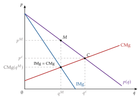
Fuente: elaboración propia a partir de Tirole (1988, cap. 1).
iii) Implicaciones
En el equilibrio, el monopolista produce hasta igualar el ingreso marginal y el coste marginal, y fija el precio según la demanda: \(p^M>\mathrm{CMg}(q^M)\) y \(q^M<q^c\). Cobra más y produce menos que la competencia.
A diferencia de la competencia perfecta:
puede tener beneficios extraordinarios a largo plazo: atraerían competidores, pero las barreras de entrada les impiden entrar. Dependen de las barreras y de que la demanda no sea perfectamente elástica (es la lectura económica del índice de Lerner);
no produce necesariamente en el mínimo del coste medio a largo plazo: según el tamaño de la demanda, puede quedarse por debajo de la escala eficiente, con capacidad ociosa y economías de escala sin aprovechar, o por encima, con deseconomías.19
c) Extensiones
Una aplicación directa del modelo es el efecto de los impuestos sobre el monopolista, que el test suele preguntar (anexo C).
Impuestos sobre el monopolista. Con un impuesto unitario \(t\), el problema es \(\max_q\ p(q)\,q-C(q)-t\,q\) y la condición de primer orden pasa a \(\mathrm{IMg}(q)=\mathrm{CMg}(q)+t\): la cantidad baja y el precio sube. Cuánto sube (la traslación del impuesto) depende de la curvatura de la demanda, no solo de su pendiente (Bulow y Pfleiderer 1983): con demanda lineal \(p=a-bq\) y coste marginal constante \(c\), \(p^M=(a+c+t)/2\), y el precio sube la mitad del impuesto; con demanda isoelástica, \(p^M=\frac{|\varepsilon_{q,p}|}{|\varepsilon_{q,p}|-1}\,(c+t)\), y sube más que el impuesto. Con un impuesto ad valorem \(\tau\) sobre el precio, la condición es \((1-\tau)\,\mathrm{IMg}(q)=\mathrm{CMg}(q)\) y también reduce la cantidad. Un impuesto sobre el beneficio (con un tipo menor que 1) o de suma fija no altera la cantidad, porque no cambia la condición de primer orden.
d) Valoración
El modelo explica con una sola condición, \(\mathrm{IMg}=\mathrm{CMg}\), por qué el monopolista cobra más y produce menos, y da una medida del poder de mercado, el índice de Lerner, que se usa en la práctica. Ha fundamentado la intervención en los mercados monopolísticos y la eliminación de barreras legales a la entrada.
Pero deja abierta la pregunta normativa: ¿cuánto le cuesta a la sociedad que el precio supere el coste marginal? Es lo que analizamos a continuación.
I.3. Análisis de eficiencia y bienestar
Una vez visto cómo fija el monopolista el precio y la cantidad, pasamos a preguntarnos cuánto le cuesta eso a la sociedad. La conclusión anticipada: el coste estático, el triángulo de Harberger, es pequeño en las estimaciones clásicas, pero el coste total puede ser mucho mayor si se suman los costes inflados y los recursos que se gastan en conseguir y defender el monopolio.
a) Idea
Comparamos el equilibrio del monopolio con el competitivo, que maximiza el excedente total, \(\mathrm{ET}=\mathrm{EC}+\mathrm{EP}\): es el 1TFEB en equilibrio parcial, que exige \(p=\mathrm{CMg}\) en la última unidad intercambiada [ver tema 3.A.16] [ver tema 3.A.22].20
b) Modelo
i) Supuestos
La demanda \(p(q)\) mide la valoración marginal de los consumidores: con utilidad cuasilineal, el excedente del consumidor es una medida exacta de su bienestar [ver tema 3.A.9].
El coste marginal mide el coste de oportunidad de producir.
El monopolio y la industria competitiva tienen la misma función de costes (supuesto que se levanta con la ineficiencia X).
ii) Desarrollo
Ineficiencia asignativa en el mercado del bien (gráfico 2). Al pasar de la competencia al monopolio:
el rectángulo entre \(p^c\) y \(p^M\) hasta \(q^M\) pasa de los consumidores al monopolista: es una transferencia, no una pérdida;
los 2 triángulos correspondientes a las unidades entre \(q^M\) y \(q^c\), uno que era excedente del consumidor y otro que era excedente del productor, desaparecen: son la pérdida irrecuperable de eficiencia o triángulo de Harberger. Son unidades que los consumidores valoran por encima de lo que cuesta producirlas y que no se producen.
Cuánto vale el triángulo. Con coste marginal constante, aproximándolo por un triángulo con la elasticidad del equilibrio, \[\mathrm{PIE}\approx\tfrac12\,\Delta p\,\Delta q\approx\tfrac12\,|\varepsilon_{q,p}|\,\mathcal{L}^2\,p^Mq^M, \tag{5}\] proporcional al cuadrado del margen. Y como el monopolista fija su precio según (4), \(|\varepsilon_{q,p}|=1/\mathcal{L}\) y \(\mathrm{PIE}\approx\tfrac12\,\mathcal{L}\,p^Mq^M=\tfrac12\,B\): la pérdida irrecuperable es del orden de la mitad del beneficio del monopolista (exactamente la mitad con demanda lineal, coste marginal constante y sin costes fijos).21
Ineficiencia asignativa en los mercados de factores. El monopolista contrata cada factor hasta que su ingreso del producto marginal, \(\mathrm{IPMg}_i=\mathrm{IMg}\cdot\mathrm{PMg}_i\), iguala su precio, y no hasta que lo iguala el valor del producto marginal, \(\mathrm{VPMg}_i=p\cdot\mathrm{PMg}_i\), que es mayor porque \(\mathrm{IMg}<p\). Emplea menos factores de los eficientes: es lo que Robinson llama explotación monopolística de los factores.22
Ineficiencia productiva: no tiene por qué producir en el mínimo del coste medio a largo plazo (I.2), así que puede operar con una escala ineficiente.
Ineficiencia X (Leibenstein 1966): sin la presión de la competencia, los costes observados se alejan del mínimo, \(C^{\mathrm{obs}}=(1+\chi)\,C(q)\) con \(\chi\geq 0\) [ver tema 3.A.12]. Como dice Hicks (1935, 8), «el mejor de todos los beneficios del monopolio es una vida tranquila». En el gráfico, el coste marginal sube a \((1+\chi)\,\mathrm{CMg}\) y se pierde, además, la franja entre las 2 curvas de coste hasta \(q^M\): recursos que se gastan en producir lo que podría producirse con menos.
Búsqueda de rentas: el beneficio del monopolio es un premio por el que se compite (grupos de presión, licencias, litigios). Tullock (1967) señala que los recursos dedicados a conseguirlo son un coste social, y Posner (1975) supone que la competencia por el premio lo disipa entero: todo el rectángulo del beneficio se suma a la pérdida [ver tema 4.B.2].
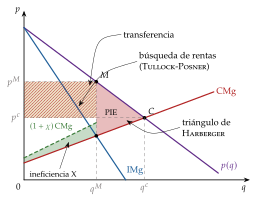
iii) Implicaciones
La pérdida del monopolio va del triángulo de Harberger (cota inferior) al triángulo más la franja de la ineficiencia X y el rectángulo de la búsqueda de rentas (cota superior).
Como la pérdida crece con el cuadrado del margen, los monopolios con demanda muy inelástica, que cargan márgenes altos, son los más costosos.
c) Extensiones: eficiencia dinámica
Schumpeter (1942) defiende que el beneficio del monopolio financia y premia la innovación: la pérdida estática se compensa con más progreso técnico. De ahí las patentes, un monopolio temporal concedido a propósito.
Arrow (1962) responde que el incentivo a innovar es mayor en competencia, porque el monopolista ya cobra rentas con la tecnología vieja y solo gana la diferencia (efecto reemplazo).
La evidencia sugiere una relación en forma de U invertida entre competencia e innovación: la innovación aumenta con la competencia cuando esta es escasa y disminuye cuando es muy intensa (Aghion et al. 2005) [ver tema 3.A.44].
d) Evidencia empírica
Harberger (1954), con datos de la industria manufacturera de Estados Unidos de 1924-1928 y elasticidad unitaria, estima que la pérdida no llegaba a «una treceava parte del uno por ciento de la renta nacional» (Schmitz 2012). Posner (1975), al añadir la búsqueda de rentas, y Cowling y Mueller (1978), con la fórmula \(\mathrm{PIE}=B/2\) y los gastos en publicidad, obtienen pérdidas muy superiores.
Hoy los márgenes son mayores: De Loecker, Eeckhout y Unger (2020) estiman que el margen medio de las empresas cotizadas de Estados Unidos sobre el coste marginal pasó del 21 % en 1980 al 61 % en 2016, sobre todo porque las empresas con más poder de mercado ganaron cuota. Es un margen agregado de la economía, no de monopolios, pero es justo el índice de Lerner que mide el poder de mercado.
e) Valoración
El monopolio suele ser ineficiente, pero de ahí no se sigue que haya que desmantelarlo siempre: hay monopolios eficientes en la asignación, como el que discrimina perfectamente (II.1), o en los costes, como el monopolio natural (II.2), y la intervención pública tiene sus propios costes [ver tema 3.A.23]. Lo que haya que hacer depende del tipo de monopolio y del origen de su poder.
Recapitulando: \(\mathrm{IMg}=\mathrm{CMg}\), un margen inversamente proporcional a la elasticidad y una pérdida de bienestar que va más allá del triángulo de Harberger. Pero el modelo supone un solo precio, unos costes sin ventajas de tamaño y un solo producto. Pasamos a levantar esos supuestos.
II. Desarrollos de la teoría del monopolio11′30″
En el cante: la definición de discriminación, sus 3 condiciones y la clasificación por la información del monopolista; el primer grado como una capa más del gráfico del equilibrio; el segundo grado con el modelo de 2 tipos y su gráfico (restricciones saturadas, renta informativa, «no distorsión arriba», distorsión abajo) y la calidad en una frase; el tercer grado con la regla de Lerner por grupos y su juicio de bienestar; la conjetura de Coase en una frase (5′). El monopolio natural: la subaditividad como definición, el gráfico de la sostenibilidad, las economías de alcance como condición necesaria y los subsidios cruzados; la regulación: el dilema, el primer óptimo con pérdidas, el coste medio, la tarifa en dos partes y la regla de Ramsey-Boiteux junto al índice de Lerner (4′). La producción conjunta: la regla de Lerner con elasticidades cruzadas (solo su estructura y los 2 signos), las proporciones fijas y el multiplanta (2′30″). Los 3 casos de la tarifa en dos partes, la venta conjunta, los ejemplos, la sostenibilidad con reacción del incumbente y el aprendizaje son de profundización; las derivaciones, en el anexo B.
Una vez estudiado el modelo básico, pasamos a sus desarrollos. La idea que los une, y conclusión anticipada del bloque: cada vez que se levanta un supuesto, el monopolista adapta la misma regla de la elasticidad inversa, y el juicio de bienestar puede cambiar de signo: la discriminación puede aumentar la producción, y un monopolio natural puede ser la forma más barata de producir.
II.1. Discriminación de precios
En el modelo básico el monopolista cobra un precio uniforme. Pero puede cobrar precios distintos para extraer parte del excedente que el precio uniforme deja a los consumidores. Hay discriminación de precios cuando se venden unidades del mismo bien a precios distintos, al mismo o a distintos compradores, sin que la diferencia se deba a diferencias de coste (Varian 1989).
Requiere 3 condiciones:
poder de mercado: con demanda perfectamente elástica no hay excedente que extraer;
información sobre la disposición a pagar de los consumidores, directa, a través de una señal o a través de lo que eligen;
ausencia de reventa (arbitraje) entre consumidores: si quien compra barato pudiera revender a quien paga caro, solo quedaría un precio.
Pigou (1920) distingue 3 grados: en el primero, cada unidad se vende a su precio de demanda; en el segundo, hay precios por tramos de cantidad; en el tercero, precios distintos para grupos separados por alguna señal observable. Hoy se ordenan por la información del monopolista (Tirole 1988, cap. 3):
primer grado (discriminación perfecta): observa la valoración de cada consumidor;
segundo grado (fijación no lineal de precios): no observa la valoración de cada consumidor, pero conoce su distribución, y ofrece a todos el mismo menú, del que cada uno elige: los consumidores se autoseleccionan;
tercer grado (por grupos): observa una característica del consumidor (la edad, el lugar de residencia) correlacionada con la valoración, y cobra a cada grupo un precio lineal distinto.
La discriminación intertemporal de los bienes duraderos, que algunos manuales llaman «de cuarto grado», no es un grado más de la clasificación de Pigou: es una forma de autoselección en el tiempo (II.1.4).
II.1.1. Discriminación de primer grado
a) Idea
Es el caso extremo: el monopolista sabe cuánto está dispuesto a pagar cada consumidor por cada unidad y puede cobrárselo.
b) Modelo
i) Supuestos
El monopolista observa la valoración de cada consumidor por cada unidad y puede cobrar por ella exactamente su precio de reserva; no hay reventa.
ii) Desarrollo
Cada unidad adicional se vende a su precio de reserva sin bajar el de las demás, así que el ingreso marginal es la propia demanda, \(\mathrm{IMg}(q)=p(q)\), y produce hasta que la última unidad se vende a su coste marginal, \(p(q^{*})=\mathrm{CMg}(q^{*})\): la cantidad competitiva, \(q^{*}=q^c\) (gráfico 3).
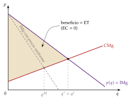
Fuente: elaboración propia a partir de Tirole (1988, cap. 3).
iii) Implicaciones
La asignación es eficiente: el excedente total es el máximo y el triángulo de Harberger desaparece. Pero todo es excedente del productor: el excedente del consumidor es nulo. El problema es de equidad, no de eficiencia, y la intervención solo se justifica por motivos distributivos.23
Es la cota superior del beneficio de cualquier forma de discriminación.
c) Evidencia empírica
Es difícil de encontrar en estado puro: el regateo en un zoco o el médico rural que cobra a cada paciente según lo que puede pagar se le acercan. Hoy, la tarificación personalizada con datos y algoritmos se aproxima a ella, aunque la evidencia sobre su uso masivo es todavía limitada.
d) Valoración
Exige una información que el monopolista casi nunca tiene. Cuando no observa la valoración de cada uno, tiene que conseguir que los consumidores la revelen: es la discriminación de segundo grado.
II.1.2. Discriminación de segundo grado: autoselección en cantidad y en calidad
a) Idea
Ahora el monopolista no sabe quién es quién, y si cobrara más a los que más valoran el bien, estos se harían pasar por los que menos lo valoran. Lo que sí puede hacer es ofrecer a todos el mismo menú de opciones (paquetes de cantidad y pago, o versiones de calidad y precio), diseñado para que cada tipo elija la suya y revele así su valoración. Es un problema de autoselección (screening) en un entorno de selección adversa [ver tema 3.A.13] (Mussa y Rosen 1978; Maskin y Riley 1984).
Las personas que compran la misma cantidad pagan lo mismo, pero el precio por unidad cambia con la cantidad: es una tarifa no lineal.
b) Modelo
i) Supuestos
2 tipos de consumidores, con valoración baja \(t_1\) y alta \(t_2>t_1\), en proporciones \(\pi\) y \(1-\pi\), que el monopolista conoce; no sabe de qué tipo es cada uno.
El tipo \(i\) obtiene una utilidad \(t_i\,u(q)-T\) al comprar \(q\) unidades pagando \(T\) en total, con \(u(0)=0\), \(u'>0\) y \(u''<0\); si no compra, 0.
Coste marginal constante \(c\). El monopolista ofrece un menú \(\{(q_1,T_1),(q_2,T_2)\}\) y no hay reventa.
ii) Desarrollo
El monopolista elige el menú que maximiza su beneficio esperado: \[\begin{array}{rl}\displaystyle \max_{q_1,T_1,q_2,T_2} & \displaystyle \pi\,(T_1-c\,q_1)+(1-\pi)\,(T_2-c\,q_2) \\ \text{s.a.} & t_1u(q_1)-T_1\geq 0\quad(\mathrm{PC}_1) \\ & t_2u(q_2)-T_2\geq 0\quad(\mathrm{PC}_2) \\ & t_1u(q_1)-T_1\geq t_1u(q_2)-T_2\quad(\mathrm{IC}_1) \\ & t_2u(q_2)-T_2\geq t_2u(q_1)-T_1\quad(\mathrm{IC}_2)\end{array} \tag{6}\] con 2 restricciones de participación (PC: cada tipo prefiere comprar a no comprar) y 2 de compatibilidad de incentivos (IC: cada tipo prefiere su opción a la del otro).
En el óptimo solo se saturan 2 (anexo B.3): la de participación del tipo bajo y la de incentivos del alto. Al tipo bajo se le extrae todo su excedente, \(T_1=t_1u(q_1)\); al alto hay que dejarle lo que ganaría haciéndose pasar por bajo, su renta informativa: \[T_2=t_2u(q_2)-\underbrace{(t_2-t_1)\,u(q_1)}_{\text{renta informativa del tipo alto}} .\]
Sustituyendo los pagos y derivando respecto a las cantidades: \[t_2\,u'(q_2)=c,\qquad t_1\,u'(q_1)\left[1-\frac{1-\pi}{\pi}\cdot\frac{t_2-t_1}{t_1}\right]=c\ \Longrightarrow\ t_1\,u'(q_1)>c . \tag{8}\]
Interpretación gráfica (gráfico 4): con las demandas de los 2 tipos, \(t_iu'(q)\), y el coste marginal \(c\), el tipo alto compra donde su demanda corta a \(c\); el tipo bajo, a la izquierda de ese punto; la renta informativa es el área entre las 2 demandas hasta \(q_1\).
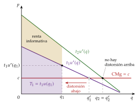
Fuente: elaboración propia a partir de Maskin y Riley (1984) y Tirole (1988, cap. 3).
iii) Implicaciones
No hay distorsión arriba: el tipo alto compra la cantidad eficiente (su valoración marginal iguala el coste marginal) y se queda con una renta informativa.
Distorsión abajo: al tipo bajo se le ofrece menos de lo eficiente. Cada unidad que se le quita le cuesta al monopolista algo de excedente que ya no puede cobrarle, pero reduce la renta que tiene que dejar al tipo alto, porque la opción del bajo se vuelve menos atractiva de imitar. Cuantos más tipos altos haya (\((1-\pi)/\pi\) grande) y más distintos sean, mayor es la distorsión; si \(\pi\,t_1\leq(1-\pi)\,(t_2-t_1)\), conviene excluir al tipo bajo.
Presentación del menú: equivale a una tarifa no lineal con descuentos por cantidad (el paquete grande tiene un precio medio menor), o como 2 tarifas en dos partes entre las que se elige: cuota mayor y precio por unidad igual a \(c\) para el tipo alto; cuota menor y precio por unidad mayor que \(c\) para el bajo.
Bienestar: la cantidad del tipo alto es eficiente y la del bajo no; frente al precio uniforme, la autoselección puede aumentar o reducir el excedente total.
c) Extensiones
Discriminación en calidad. Si en lugar de cantidades se ofrecen calidades con un coste creciente, el análisis es idéntico: el tipo alto recibe la calidad eficiente y el bajo una calidad degradada a propósito, para que la versión barata no tiente al alto (Mussa y Rosen 1978). Ejemplos: la tapa dura y la tapa blanda de un libro; la clase business y la turista; las versiones «básica» y «profesional» de un programa, a veces fabricando primero la completa y quitándole funciones después (damaged goods, Deneckere y McAfee (1996)).24
Una sola tarifa en dos partes para todos, \(T(q)=A+p\,q\): una cuota fija \(A\) que da derecho a comprar y un precio \(p\) por unidad, de modo que el precio medio baja con la cantidad.25 El gráfico 5 muestra 3 casos con 2 tipos de consumidores:
si el monopolista puede distinguir a los tipos y cobrarles cuotas distintas, fija \(p=c\) y cuotas iguales al excedente de cada tipo, \(A_i=\mathrm{EC}_i(c)\): equivale a la discriminación perfecta;
si la cuota tiene que ser la misma para todos y no quiere excluir a nadie, la fija en el excedente del tipo bajo, \(A=\mathrm{EC}_1(p)\), y el precio por unidad queda por encima del coste marginal (Oi 1971). Con \(n_i\) consumidores de cada tipo y demandas \(q_i(p)\), \[p-c=\frac{n_2\,[q_2(p)-q_1(p)]}{-[n_1q_1'(p)+n_2q_2'(p)]}>0 :\] subir \(p\) por encima de \(c\) resta algo de excedente al tipo bajo, y por tanto a la cuota, pero permite cobrar al alto, por unidad, parte de lo que no se le puede cobrar en la cuota;
si los tipos bajos son pocos, puede compensar fijar la cuota en el excedente del tipo alto, \(A=\mathrm{EC}_2(c)\) con \(p=c\), y excluir a los bajos.
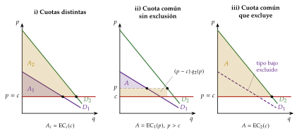
Fuente: elaboración propia a partir de Oi (1971).
Venta conjunta (bundling). Si el monopolista vende varios bienes, puede ofrecerlos en un paquete a un precio menor que la suma de los precios por separado. No es discriminación de segundo grado por cantidad, sino otra forma de discriminar: cuando las valoraciones de los consumidores están correlacionadas negativamente, el paquete reduce la dispersión de la disposición a pagar y permite extraer más excedente (Adams y Yellen 1976). Ejemplo con coste nulo: el consumidor 1 valora el bien A en 6 y el B en 4; el 2, al revés. Por separado, lo mejor es cobrar 4 por cada bien (ingreso 16); el paquete a 10 lo compran los 2 (ingreso 20). En la venta conjunta mixta se ofrecen el paquete y los bienes sueltos, y los consumidores se autoseleccionan, como en el segundo grado. Está muy extendida en las tecnologías de la información, por ejemplo en las suscripciones a revistas en línea. Si lo hace una empresa dominante para extender su poder a otro mercado, puede ser un abuso (ventas vinculadas) [ver tema 3.B.39].
d) Evidencia empírica
Las tarifas de telefonía móvil y de datos, los bonos de transporte y las suscripciones con varios niveles son menús de autoselección; Varian (1989) repasa los estudios empíricos.
e) Valoración
Explica prácticas generalizadas, como los descuentos por volumen o las versiones de un producto, que no se entienden con un precio uniforme, y muestra el coste de la información privada: la renta informativa y la distorsión abajo. Es la misma lógica que el menú de contratos del regulador (anexo A). Su límite es que el monopolista debe conocer la distribución de los tipos; cuando lo que observa es una característica del consumidor, pasamos a la discriminación de tercer grado.
II.1.3. Discriminación de tercer grado
a) Idea
El monopolista no conoce la valoración de cada consumidor, pero observa una característica suya (edad, lugar de residencia, condición de estudiante) que lo sitúa en un grupo, y conoce la demanda de cada grupo. Cobra un precio distinto a cada grupo, el mismo para todas las unidades dentro de él.
Además de la ausencia de reventa entre grupos, necesita poder separar la demanda en varios submercados y que sus elasticidades sean distintas.26
b) Modelo
i) Supuestos
2 grupos, \(k=1,2\), con demandas inversas \(p_k(q_k)\) conocidas; precio lineal dentro de cada grupo; sin reventa entre grupos; un único coste, \(C(q_1+q_2)\).
ii) Desarrollo
Es un monopolio que vende en 2 mercados separados: \[\begin{array}{rl}\displaystyle \max_{q_1,q_2} & \displaystyle p_1(q_1)\,q_1+p_2(q_2)\,q_2-C(q_1+q_2) \\ \text{s.a.} & q_1\geq 0 \\ & q_2\geq 0\end{array}\]
Las condiciones de primer orden igualan el ingreso marginal de cada mercado con el coste marginal común, y de ahí sale una regla de Lerner por grupo: \[\mathrm{IMg}_1(q_1)=\mathrm{IMg}_2(q_2)=\mathrm{CMg}(q_1+q_2)\ \Longrightarrow\ \mathcal{L}_k=\frac{p_k-\mathrm{CMg}}{p_k}=\frac{1}{|\varepsilon_{q_k,p_k}|},\quad k=1,2. \tag{11}\] Si en un mercado el IMg fuera mayor que en el otro, le convendría pasar una unidad de este a aquel.
Interpretación gráfica (gráfico 6): el IMg agregado (suma horizontal de los IMg de los 2 grupos) corta al CMg y fija la producción total; la altura de ese corte da en cada mercado la cantidad y, en su demanda, el precio.
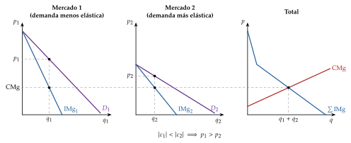
Fuente: elaboración propia a partir de Robinson (1933).
iii) Implicaciones
Es la regla de la elasticidad inversa aplicada a cada grupo: el precio es mayor en el grupo de demanda menos elástica. Si las elasticidades son iguales, no compensa discriminar.
Bienestar. El beneficio no puede bajar, porque el precio uniforme sigue siendo posible; el excedente total puede subir o bajar. La discriminación desplaza ventas del grupo que paga más al que paga menos, lo que es ineficiente (la misma unidad se valora distinto en cada grupo), y por eso solo puede aumentar el excedente total si aumenta la cantidad total (Schmalensee 1981; Varian 1985). Con coste marginal constante \(c\) y \(p^u\) el precio uniforme, \[\textstyle\sum_k(p_k-c)\,\Delta q_k\ \leq\ \Delta\mathrm{ET}\ \leq\ (p^u-c)\,\Delta Q ,\] con \(\Delta Q=\sum_k\Delta q_k\). Con demandas lineales y todos los grupos servidos, la cantidad total no cambia y el excedente total baja (Robinson 1933).
El caso favorable es el de un grupo que, con precio uniforme, no compraría (el precio se fija para el grupo de valoración alta) y con discriminación sí: la cantidad aumenta y pueden ganar todos, una mejora en el sentido de Pareto. Es el caso de los medicamentos más baratos en los países pobres.
c) Evidencia empírica
Los descuentos para jóvenes y mayores en el transporte, las tarifas pensadas para quienes viajan por negocios, los precios distintos por país de los medicamentos o de los libros de texto, y los cupones de descuento, que separan a los consumidores más sensibles al precio: los que se toman la molestia de usarlos.
d) Valoración
Es la forma de discriminación más frecuente y la más fácil de observar. Su efecto sobre el bienestar es ambiguo: la pregunta clave es si la discriminación abre mercados que con un precio uniforme no se atenderían.
II.1.4. Discriminación intertemporal: bienes duraderos y conjetura de Coase
a) Idea
Si el bien dura y el monopolista puede bajar el precio con el tiempo, vende primero caro a los que más lo valoran y después más barato al resto: los consumidores se autoseleccionan por el momento de compra. Pero quien compra hoy no vuelve a comprar mañana, así que los bienes que vende en periodos distintos son sustitutivos: el monopolista compite con su yo futuro.
b) Modelo
i) Supuestos
El bien es duradero: quien compra hoy no vuelve a comprar mañana.
El monopolista puede revisar el precio con frecuencia y no puede comprometerse a mantenerlo.
Los consumidores son pacientes y anticipan los precios futuros.
ii) Desarrollo
Conjetura de Coase: Coase (1972) sostiene que, si puede revisar el precio con frecuencia y los consumidores son pacientes, nadie paga hoy un precio alto sabiendo que mañana bajará, y el precio se acerca al coste marginal: el monopolista pierde su poder de mercado. Gul, Sonnenschein y Wilson (1986) lo demuestran con horizonte infinito y revisiones del precio cada vez más frecuentes.27
iii) Implicaciones
El monopolista gana si consigue comprometerse a no bajar el precio. Por eso alquila en lugar de vender (leasing), limita la producción, garantiza la devolución del dinero si el precio baja o hace el bien menos duradero: obsolescencia, nuevas ediciones que acaban con el mercado de segunda mano, como en los libros de texto (Bulow 1982).
c) Evidencia empírica
El precio de lanzamiento de los teléfonos y las consolas, que baja a los pocos meses, y las primeras ediciones en tapa dura de los libros.
II.1.5. Eficiencia y bienestar de la discriminación
El juicio depende del grado: el primero es eficiente pero deja a los consumidores sin excedente; el segundo distorsiona la cantidad del tipo bajo; el tercero solo mejora el excedente total si aumenta la cantidad. La lección general: cuanta más información e instrumentos tiene el monopolista, más excedente extrae, y eso no siempre empeora la eficiencia.
Una vez levantado el supuesto de precio único, pasamos al de unos costes sin ventajas de tamaño: el monopolio que nace de la tecnología.
II.2. Monopolio natural
Una vez vistos los monopolios que nacen de la información, pasamos al que nace de la tecnología. La conclusión anticipada: aquí el monopolio es la forma más barata de producir, y el problema deja de ser cómo evitarlo para ser cómo regularlo.
II.2.1. Monopolio natural uniproducto
Existencia: subaditividad de costes
Un mercado es un monopolio natural si la función de costes es subaditiva en la producción relevante, es decir, si para todo reparto de \(q\) entre varias empresas \[C\Big(\sum_{j=1}^{n}q_j\Big)<\sum_{j=1}^{n}C(q_j) . \tag{13}\] Es más barato que toda la producción la haga una sola empresa: la eficiencia productiva exige un único productor. Es la definición de monopolio natural, no un supuesto adicional (Baumol 1977) [ver tema 3.A.12].
Con un producto, las economías de escala en todo el tramo son condición suficiente, pero no necesaria: hay subaditividad también con el coste medio ya creciente, entre el mínimo del CMe (\(q^0\)) y el punto en que 2 empresas empiezan a ser más baratas que una (\(q^1\)). En el gráfico 7, \(\mathrm{CMe}_1\) es el coste medio de una empresa y \(\mathrm{CMe}_{1+2}\) el de 2 empresas que se reparten la producción a partes iguales.
Es un concepto relativo a la demanda: el monopolio natural es una configuración de costes y de demanda.28
Ejemplos: las redes (transporte y distribución de electricidad y de gas, abastecimiento de agua, vías férreas), no los servicios que circulan por ellas, que pueden prestarse en competencia.
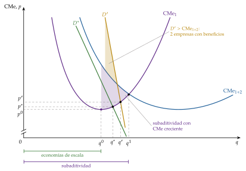
Fuente: elaboración propia a partir de Baumol, Panzar y Willig (1982).
Sostenibilidad
Que sea más barato producir con una empresa no garantiza que la empresa pueda mantenerse sola. Un monopolio natural es sostenible si existe un precio que le permite cubrir costes atendiendo toda la demanda y al que ningún entrante, con la misma tecnología, puede obtener beneficios vendiendo a un precio igual o menor una parte de ella (Panzar y Willig 1977; Baumol, Bailey y Willig 1977).
Depende de dónde corte la demanda al coste medio (gráfico 7):
si lo corta en su tramo decreciente, antes de \(q^0\), es sostenible: para atraer clientes, el entrante tendría que cobrar menos que el coste medio que tendría con una cantidad menor, y perdería dinero;
si lo corta entre \(q^0\) y \(q^1\), es un monopolio natural pero, si el incumbente no puede reaccionar y debe atender toda la demanda a su precio, no es sostenible: un entrante puede producir \(q^0\), en el mínimo del coste medio, y vender algo más barato que el incumbente con beneficio;
si el incumbente puede reaccionar, la sostenibilidad depende de si la demanda queda por debajo del coste medio que tendrían 2 empresas repartiéndose el mercado, \(\mathrm{CMe}_{1+2}\): si queda por debajo, el entrante anticipa que, tras su entrada, las 2 tendrían pérdidas, y no entra (Segura 1996).29
Relación con los mercados impugnables: si la entrada y la salida son libres y sin costes hundidos, la sola amenaza de entrada obliga al monopolio natural sostenible a cobrar el coste medio, sin beneficios extraordinarios (Baumol, Panzar y Willig 1982) [ver tema 3.A.15].
II.2.2. Monopolio natural multiproducto
Con varios productos, la definición sigue siendo la subaditividad de \(C(\vec{w},\vec{q})\): ningún reparto de \(\vec{q}\) entre varias empresas es más barato que producirlo todo en una. Las economías de alcance, \[C(q_1,q_2)<C(q_1,0)+C(0,q_2),\] es decir, producir los 2 bienes en una empresa es más barato que en 2 empresas especializadas, son condición necesaria, no suficiente; una condición suficiente es que, además, el coste incremental medio de cada producto sea decreciente (Baumol, Panzar y Willig 1982) [ver tema 3.A.12].
Sostenibilidad. Exige, además, precios libres de subsidios cruzados (Faulhaber 1975): el monopolista no puede vender unos bienes caros para financiar otros por debajo de su coste. Un vector de precios está libre de subsidios cruzados si pasa 2 pruebas:
prueba del coste aislado: ningún subconjunto de productos genera ingresos mayores que lo que costaría producirlo por separado; si no, un entrante produciría solo esos bienes y los vendería más baratos;
prueba del coste incremental: ningún subconjunto genera ingresos menores que lo que cuesta añadirlo a la producción del resto; si no, los demás productos lo están financiando.
Es una condición necesaria de la sostenibilidad, no suficiente; si la empresa cubre exactamente sus costes, las 2 pruebas son equivalentes.
II.2.3. Regulación del monopolio natural
a) Idea
Si el monopolio natural es sostenible, no conviene desmantelarlo, porque se perdería la eficiencia productiva, pero tampoco dejarlo libre, porque fijaría el precio de monopolio. La regulación busca el mejor equilibrio entre la eficiencia asignativa y la viabilidad financiera de la empresa.
b) Modelo
i) Supuestos
Un regulador benevolente, que maximiza el excedente total, e informado: conoce los costes y la demanda. La regulación con información asimétrica y la teoría positiva de la regulación están en el anexo A [ver tema 3.A.20].
ii) Desarrollo
Primer óptimo (first best): precio igual al coste marginal con subvención.30
Con \(p=\mathrm{CMg}\) la asignación es eficiente (Hotelling 1938). Pero, si la demanda corta en el tramo decreciente del coste medio, \(\mathrm{CMg}<\mathrm{CMe}\) y la empresa tiene pérdidas iguales a \((\mathrm{CMe}-\mathrm{CMg})\,q\) (gráfico 8), que hay que cubrir con una subvención de suma fija. Es lo mismo que impide la competencia perfecta con rendimientos crecientes: una empresa precio-aceptante pierde dinero [ver tema 3.A.21].
Problemas: los impuestos que financian la subvención distorsionan, y cada euro de subvención cuesta \(1+\lambda\) euros de bienestar, con \(\lambda>0\) el coste sombra de los fondos públicos; la subvención garantizada quita incentivos a reducir costes, y redistribuye de los contribuyentes a los usuarios.31
Si la demanda corta en el tramo creciente del coste medio, \(p=\mathrm{CMg}\) deja beneficios, que se pueden gravar con un impuesto de suma fija (anexo A).
Segundos óptimos (second best): cubrir los costes sin subvención.
Precio igual al coste medio: beneficio nulo y la mayor cantidad compatible con no tener pérdidas, pero con pérdida de eficiencia (se producen menos unidades de las eficientes), y el regulador necesita conocer los costes, que la empresa tiende a inflar; además, si el precio se revisa para cubrir costes, la empresa deja de tener incentivos a reducirlos.
Tarifa en dos partes (Coase 1946): una cuota fija \(A\) y un precio por unidad \(p=\mathrm{CMg}\), como en la discriminación de segundo grado (II.1.2). Con \(n\) usuarios y coste fijo \(\mathrm{CF}\), la cuota \(A=\mathrm{CF}/n\) cubre las pérdidas sin distorsionar el margen.32 Funciona si la cuota no expulsa a nadie; si expulsa a usuarios que valoran el servicio por encima de su coste, conviene bajar la cuota y subir el precio por encima del coste marginal (Oi 1971), o cobrar cuotas distintas según la capacidad de pago (por ejemplo, con bonos sociales), que es discriminar en la parte fija.33
Tarifas de punta y valle: si la demanda varía en el tiempo (por horas o estaciones), el producto no se puede almacenar y la capacidad se fija para la punta, la tarifa eficiente cobra en el valle solo el coste variable, \(p_v=b\), y en la punta también el coste de la capacidad, \(p_p=b+\beta\) (Boiteux 1949; Steiner 1957). El desarrollo y la aplicación a la factura eléctrica están en el anexo A.
Precios de Ramsey-Boiteux, para el monopolio natural multiproducto: el regulador maximiza el excedente total sujeto a que la empresa no tenga pérdidas, \[\begin{array}{rl}\displaystyle \max_{\vec{p}} & \displaystyle \mathrm{ET}(\vec{p})=\mathrm{EC}(\vec{p})+B(\vec{p}) \\ \text{s.a.} & B(\vec{p})\geq 0\end{array}\] y, con demandas independientes, obtiene (Ramsey 1927; Boiteux 1956) (anexo B.5): \[\frac{p_i-\mathrm{CMg}_i}{p_i}=\frac{\lambda}{1+\lambda}\cdot\frac{1}{|\varepsilon_{q_i,p_i}|}\qquad\forall i, \tag{16}\] con \(\lambda\) el multiplicador de la restricción presupuestaria: el bienestar que se ganaría si se exigiera un euro menos de beneficio.
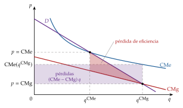
Fuente: elaboración propia a partir de Braeutigam (1989).
iii) Implicaciones
La regla de Ramsey-Boiteux es la regla de Lerner amortiguada. El número de Ramsey, \(\lambda/(1+\lambda)\in[0,1)\), crece con \(\lambda\): si la restricción no aprieta (\(\lambda=0\)), \(p_i=\mathrm{CMg}_i\); cuanto más aprieta (más coste fijo que cubrir), mayores son los márgenes, y si apretara sin límite (\(\lambda\to\infty\)), cada precio sería el de monopolio.
Entre ambos extremos, el regulador recarga más los bienes de demanda menos elástica, como el monopolista que discrimina en tercer grado (II.1.3), porque ahí subir el precio distorsiona menos la cantidad, pero solo lo justo para cubrir costes. Es la misma regla de la elasticidad inversa de la imposición óptima [ver tema 4.B.11].
Con transferencias públicas que cuestan \(1+\lambda\), la regla es la misma, con \(\lambda\) el coste sombra de los fondos públicos (Laffont y Tirole 1993, cap. 3): por eso se usa la misma letra en los 2 casos. Con demandas dependientes aparecen las elasticidades cruzadas, como en el monopolio multiproducto (II.3.1).
c) Valoración
La regla de Ramsey-Boiteux exige conocer los costes y las elasticidades, y puede ser regresiva: los bienes de demanda inelástica suelen ser de primera necesidad y pesan más en la cesta de los hogares de menos renta.
Todos estos esquemas suponen que el regulador conoce los costes y la demanda y que solo le mueve el bienestar. Cuando no es así (información asimétrica, captura del regulador), aparecen la regulación de la tasa de rentabilidad, los precios máximos, los menús de contratos y la competencia por comparación (anexo A) [ver tema 3.A.20].
Eficiencia y bienestar: el monopolio natural es eficiente en los costes y, bien regulado, puede acercarse a la eficiencia asignativa; el coste de lograrlo depende de la información del regulador. Una vez levantado el supuesto de costes sin ventajas de tamaño, pasamos al de un solo producto y una sola planta.
II.3. Producción conjunta
Una vez levantados los supuestos de precio único y de costes sin ventajas de tamaño, levantamos el de un solo bien y una sola planta. La conclusión anticipada: el monopolista que produce varios bienes internaliza las relaciones entre ellos, en la demanda y en los costes, y eso cambia sus precios respecto a los de varios monopolistas independientes.
II.3.1. Monopolio multiproducto
Con \(\vec{q}=(q_1,\dots,q_n)\), demandas \(q_i(\vec{p})\) y costes \(C(\vec{q})\), el resultado depende de si las demandas y los costes de los bienes están relacionados. Hay 4 casos:
Demandas independientes y costes separables: cada bien es un monopolio independiente, con \(\mathcal{L}_i=1/|\varepsilon_{q_i,p_i}|\), como en el monopolio uniproducto.
Demandas dependientes y costes separables: el margen de cada bien tiene en cuenta lo que su precio hace vender de los demás (anexo B.4): \[\mathcal{L}_i=\frac{1}{|\varepsilon_{q_i,p_i}|}+\sum_{j\neq i}\frac{(p_j-\mathrm{CMg}_j)\,q_j}{p_i\,q_i}\cdot\frac{\varepsilon_{q_j,p_i}}{|\varepsilon_{q_i,p_i}|} . \tag{17}\]
Sustitutivos (\(\varepsilon_{q_j,p_i}>0\)): subir \(p_i\) desvía ventas hacia \(j\), que también es suyo, así que fija precios más altos que varios monopolistas independientes: los consumidores no pueden «escapar».34
Complementarios (\(\varepsilon_{q_j,p_i}<0\)): bajar \(p_i\) hace vender más de \(j\), así que fija precios más bajos, y su índice de Lerner es menor que la inversa de la elasticidad propia; puede incluso vender uno por debajo de su coste marginal, con un índice de Lerner negativo (consolas e impresoras baratas que se rentabilizan con los juegos y los cartuchos). Es la misma lógica que la de la doble marginalización (III.2).
Demandas independientes y costes no separables: cuando producir un bien abarata el otro (complementariedad de costes, \(\partial^2C/\partial q_1\partial q_2<0\), que implica economías de alcance) [ver tema 3.A.12], las condiciones de primer orden, \(\mathrm{IMg}_i(q_i)=\partial C(\vec{q})/\partial q_i\), llevan a producir más de los 2 bienes que 2 empresas separadas, porque cada unidad de un bien reduce el coste marginal del otro.35
Demandas dependientes y costes no separables: se combinan los 2 efectos anteriores; los márgenes de (17) se calculan con los costes marginales \(\partial C(\vec{q})/\partial q_i\), que dependen de la producción de los demás bienes.
En todos los casos, la condición de que el ingreso marginal de cada bien iguale su coste marginal se cumple; lo que cambia es que ambos dependen de lo que se produce de los demás. Un precio por debajo del coste marginal corriente solo aparece con bienes complementarios en la demanda o con aprendizaje; no hay que llamarlo subsidio cruzado, un término que se reserva para los precios que no pasan las pruebas de Faulhaber (1975) (II.2.2).
II.3.2. Producción conjunta en proporciones fijas
a) Idea
Hay bienes que salen juntos de un mismo proceso, en proporciones fijas: la carne y la piel, la lana y la carne del cordero, el coque y el gas. Es la oferta conjunta de Marshall (1890, lib. V, cap. 6), que ya había estudiado Mill (1848). No hay un coste propio de cada bien, sino del proceso.
b) Modelo
i) Supuestos
Cada unidad del proceso, con coste \(C(q)\), da una unidad de cada bien.
El monopolista puede desechar lo que sobre de cada bien.
ii) Desarrollo
El monopolista elige \(q\) y cuánto vende de cada bien, \(x_i\leq q\): \[\begin{array}{rl}\displaystyle \max_{q,\,x_1,\,x_2} & \displaystyle p_1(x_1)\,x_1+p_2(x_2)\,x_2-C(q) \\ \text{s.a.} & x_1\leq q \\ & x_2\leq q\end{array}\]
Si en el óptimo vende todo lo que produce, el ingreso marginal del proceso es la suma vertical de los ingresos marginales: \(\mathrm{IMg}_1(q)+\mathrm{IMg}_2(q)=\mathrm{CMg}(q)\).
Si a esa cantidad el ingreso marginal de un bien es negativo, le conviene vender de ese bien solo hasta donde su ingreso marginal es nulo (elasticidad unitaria) y desechar el resto, y el proceso se ajusta a \(\mathrm{IMg}_1(q)=\mathrm{CMg}(q)\). En general, \(\sum_i\max\{\mathrm{IMg}_i(q),0\}=\mathrm{CMg}(q)\) (gráfico 9).
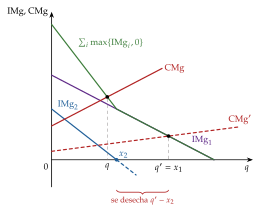
Fuente: elaboración propia a partir de Marshall (1890, lib. V, cap. 6).
iii) Implicaciones
No tiene sentido preguntar por el coste de cada bien por separado: el reparto del coste conjunto es arbitrario, y los precios los decide la demanda de cada uno. Un monopolista puede destruir producción perfectamente útil, algo que en competencia no ocurre mientras el precio sea positivo.
II.3.3. Monopolio multiplanta
Si el monopolista tiene 2 plantas con costes \(C_1(q_1)\) y \(C_2(q_2)\), resuelve \[\begin{array}{rl}\displaystyle \max_{q_1,q_2} & \displaystyle p(q_1+q_2)\,(q_1+q_2)-C_1(q_1)-C_2(q_2) \\ \text{s.a.} & q_1\geq 0 \\ & q_2\geq 0\end{array}\] y, en las plantas que producen, las condiciones de primer orden son \(\mathrm{IMg}(Q)=\mathrm{CMg}_1(q_1)=\mathrm{CMg}_2(q_2)\), con \(Q=q_1+q_2\).
Son 2 decisiones: cuánto producir, igualando el IMg con el CMg de la empresa, que es la suma horizontal de los CMg de sus plantas, y cómo repartirlo, igualando los costes marginales de las plantas, que es minimizar el coste [ver tema 3.A.12]. Con costes marginales constantes y capacidades limitadas, llena primero la planta más barata, como en el orden de mérito del mercado eléctrico. Es el mismo problema que el de un cártel que maximiza el beneficio conjunto [ver tema 3.A.19].
II.3.4. Eficiencia y bienestar de la producción conjunta
Frente a varios monopolistas independientes, el monopolio multiproducto es mejor para los consumidores si los bienes son complementarios (baja los precios) y peor si son sustitutivos (los sube); el ahorro de costes de la producción conjunta y del reparto entre plantas es una ganancia de eficiencia productiva.
En suma, discriminar, producir con costes subaditivos o vender varios productos son variaciones de la misma regla de la elasticidad inversa. En todos estos casos el poder de mercado estaba del lado del vendedor; pasamos a los mercados en que está del lado del comprador o en los 2 lados.
III. Otras estructuras de mercado relacionadas con el monopolio7′
En el cante: el monopsonio con su problema, el gasto marginal y la segunda función clave (el espejo del índice de Lerner), su gráfico con el equilibrio y la pérdida de bienestar, por qué no hay paro involuntario, las isocostes curvas en una frase y el salario mínimo por tramos sobre el mismo gráfico, con la evidencia de Card y Krueger y el SMI (3′30″); el monopolio bilateral, por capas sobre el mismo gráfico: la solución del monopsonista, la del sindicato que actúa como monopolista, el intervalo de indeterminación de Bowley, el producto de Nash escrito y su resultado (cantidad eficiente, reparto según el poder de negociación), Rubinstein en una frase y la doble marginalización en otra (3′30″). La tabla de los 4 casos, el monopsonio dinámico, el cálculo de la doble marginalización y la derivación de la solución de Nash (anexo B.8) son de profundización.
Hasta aquí el poder de mercado estaba del lado del vendedor. Por último, cambia de lado y, después, está en los 2 lados a la vez. La conclusión anticipada del bloque: el monopsonio es el espejo del monopolio (compra menos y paga menos de lo que vale el factor) y, cuando las 2 partes tienen poder, el precio queda indeterminado y lo decide la negociación.
III.1. Monopsonio
a) Idea
Hay monopsonio cuando hay un único comprador o, en la práctica, uno con poder para influir en el precio de lo que compra. El término lo introduce Joan Robinson (1933). Es frecuente en los mercados de factores: la única gran empresa de una comarca, un hospital público frente al personal de enfermería, una gran cadena de distribución frente a pequeños productores.
Así como el monopolista sabe que, para vender más, debe bajar el precio de todas las unidades que vende, el monopsonista sabe que, para comprar más, debe subir el precio de todas las unidades que compra.
b) Modelo
i) Supuestos
Una empresa precio-aceptante en el mercado del bien, a un precio \(p\) (supuesto que se levanta abajo), con producción \(q=F(L)\) y el resto de factores fijos.
Es la única demandante de trabajo en su mercado y se enfrenta a una oferta de trabajo creciente: para contratar \(L\) trabajadores tiene que pagar a todos el salario \(w_L(L)\), con \(w_L'(L)>0\) y elasticidad \(\varepsilon_{L,w_L}=\frac{dL}{dw_L}\frac{w_L}{L}>0\). Paga el mismo salario a todos, sin discriminación salarial.
ii) Desarrollo
Problema del monopsonista: \[\begin{array}{rl}\displaystyle \max_{L} & \displaystyle B(L)=p\,F(L)-w_L(L)\,L \\ \text{s.a.} & L\geq 0\end{array} \tag{20}\]
Condición de primer orden: contrata hasta que el valor del producto marginal del trabajo, \(\mathrm{VPMg}_L=p\cdot\mathrm{PMg}_L\), iguala su gasto marginal, \(\mathrm{GMg}_L=w_L(L)+w_L'(L)\,L\): contratar un trabajador más cuesta su salario más la subida que hay que dar a todos los demás. Escrito con la elasticidad de la oferta, y reordenando, se obtiene el índice de poder de monopsonio, el espejo del índice de Lerner:
\[\mathrm{VPMg}_L=\mathrm{GMg}_L=w_L(L)\Big(1+\frac{1}{\varepsilon_{L,w_L}}\Big)\ \Longleftrightarrow\ \frac{\mathrm{VPMg}_L-w_L}{w_L}=\frac{1}{\varepsilon_{L,w_L}}\tag{21}\]
La brecha entre lo que aporta el último trabajador y lo que cobra es mayor cuanto menos elástica es la oferta de trabajo que afronta la empresa. Con oferta perfectamente elástica, \(\varepsilon_{L,w_L}\to\infty\), la brecha desaparece y volvemos a la empresa precio-aceptante, \(\mathrm{VPMg}_L=w_L\).
Interpretación gráfica (gráfico 10): la curva de gasto marginal queda por encima de la oferta de trabajo (con oferta lineal, con la misma ordenada en el origen y doble pendiente). La empresa elige \(L^M\) donde el \(\mathrm{GMg}_L\) corta al \(\mathrm{VPMg}_L\), y paga el salario que la oferta da para esa cantidad, \(w^M=w_L(L^M)\). El equilibrio competitivo, \(L^c\) y \(w^c\), está donde el \(\mathrm{VPMg}_L\) corta a la oferta.
No hay curva de demanda de trabajo, por la misma razón que el monopolista no tiene curva de oferta: el empleo depende de la forma de la oferta de trabajo, no solo de su altura.
En los costes: si el precio de un factor depende de cuánto se compra, las isocostes \(\overline{C}=w_L(L)\,L+w_K\,K\) dejan de ser rectas. Su pendiente es \(-\mathrm{GMg}_L/w_K\), cada vez mayor en valor absoluto, y la combinación de mínimo coste iguala la relación marginal de sustitución técnica al cociente de gastos marginales, \(\mathrm{RMST}_{LK}=\mathrm{GMg}_L/w_K\), no al de los precios [ver tema 3.A.12].
Si la empresa es además monopolista en el mercado del bien, a la izquierda queda el ingreso del producto marginal, \(\mathrm{IPMg}_L=\mathrm{IMg}\cdot\mathrm{PMg}_L\), menor que el VPMg: \(\mathrm{IPMg}_L=w_L(L)\big(1+1/\varepsilon_{L,w_L}\big)\). Se suman las 2 brechas, la del poder en el bien y la del poder en el factor (tabla 2).

| Trabajo: competencia (oferta horizontal a \(w_L\)) |
Trabajo: monopsonio (oferta creciente \(w_L(L)\)) |
|
|---|---|---|
| Bien: competencia (\(\mathrm{IMg}=p\)) |
1. \(\mathrm{VPMg}_L=w_L\) empleo y salario máximos |
2. \(\mathrm{VPMg}_L=\mathrm{GMg}_L\) explotación monopsonística |
| Bien: monopolio (\(\mathrm{IMg}<p\)) |
3. \(\mathrm{IPMg}_L=w_L\) explotación monopolística |
4. \(\mathrm{IPMg}_L=\mathrm{GMg}_L\) empleo y salario mínimos |
Fuente: elaboración propia a partir de Robinson (1933).
Lectura de la tabla: con competencia en los 2 mercados (caso 1), el empleo y el salario son los más altos; con poder en los 2 (caso 4), los más bajos; con poder solo en uno (casos 2 y 3), quedan entre ambos, sin un orden claro entre ellos. En ninguno de los 4 casos hay paro involuntario: la empresa contrata sobre la curva de oferta, y al salario pagado trabajan todos los que quieren. El paro involuntario aparece cuando el salario se fija por encima del de la oferta, por un sindicato (III.2) o por un salario mínimo superior al competitivo.
iii) Implicaciones
Menos empleo y menos salario, no paro: \(L^M<L^c\) y \(w^M<w^c\). Los trabajadores están sobre su curva de oferta: hay menos empleo, pero no hay paro involuntario.
Bienestar: se pierde el triángulo entre el \(\mathrm{VPMg}_L\) y la oferta de trabajo desde \(L^M\) hasta \(L^c\) (trabajo que vale más de lo que cuesta y no se contrata), y el rectángulo \((w^c-w^M)\,L^M\) pasa de los trabajadores a la empresa. Es la explotación monopsonística de Robinson (1933): el trabajador cobra menos que el valor de lo que aporta en el margen.
Salario mínimo (gráfico 11). Un salario mínimo \(\underline{w}\) hace horizontal la oferta de trabajo, y con ella el gasto marginal, hasta \(L^S(\underline{w})\): contratar un trabajador más ya no obliga a subir el salario de los demás.
si \(\underline{w}\leq w^M\), no afecta;
si \(w^M<\underline{w}\leq w^c\), el empleo sube, hasta \(L^S(\underline{w})\), porque la empresa ya no gana nada contratando menos para pagar menos; el máximo de empleo se alcanza con \(\underline{w}=w^c\);
si \(\underline{w}>w^c\), el empleo lo da el \(\mathrm{VPMg}_L\), \(L^D(\underline{w})<L^S(\underline{w})\), y aparece paro involuntario; aun así, el empleo es mayor que el de monopsonio mientras \(\underline{w}\) no supere el valor del producto marginal en \(L^M\).
Con monopsonio, un salario mínimo moderado puede subir a la vez los salarios y el empleo, al revés que en competencia [ver tema 3.A.25].
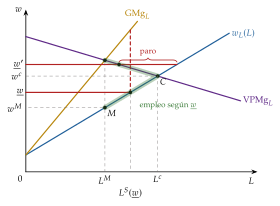
Fuente: elaboración propia a partir de Manning (2003).
c) Extensiones
Monopsonio dinámico (Manning 2003): aunque haya muchas empresas, las fricciones (los costes de buscar y de cambiar de empleo, la preferencia por un lugar) hacen que la oferta de trabajo que afronta cada una no sea perfectamente elástica: si baja el salario, no se van todos. El poder de monopsonio no exige un único empleador.
Monopsonio en los mercados de bienes: los grandes distribuidores frente a los proveedores agrícolas, y el debate europeo sobre las prácticas comerciales desleales en la cadena alimentaria [ver tema 3.B.39].
d) Evidencia empírica
Card y Krueger (1994) comparan 410 restaurantes de comida rápida de Nueva Jersey, que subió el salario mínimo de 4,25 a 5,05 dólares por hora en abril de 1992, y de Pensilvania, que no lo subió, y no encuentran indicios de que la subida redujera el empleo: un resultado coherente con el monopsonio y no con la competencia perfecta.
Yeh, Macaluso y Hershbein (2022) estiman que, en la planta manufacturera media de Estados Unidos, el ingreso del producto marginal del trabajo supera al salario en un 53 %: el trabajador cobra unos 65 centavos por cada dólar que genera en el margen. Deb et al. (2022) atribuyen el estancamiento de los salarios en Estados Unidos entre 1997 y 2016 sobre todo al poder de monopolio de las empresas en sus mercados de bienes (un 75 %) y en menor medida al de monopsonio (un 25 %).
En España, el salario mínimo interprofesional (SMI) de 2026 es de 1.221 euros al mes en 14 pagas (17.094 euros al año), un 3,1 % más que en 2025 (Ministerio de Trabajo y Economía Social 2026).
e) Valoración
El modelo explica por qué el salario mínimo no siempre destruye empleo y por qué el poder de mercado de las empresas puede deprimir los salarios. Su límite es que supone un único salario para todos y deja fuera la respuesta de los trabajadores: si se organizan en un sindicato, hay poder de mercado en los 2 lados. Es el monopolio bilateral.
III.2. Monopolio bilateral
Una vez estudiado el poder del comprador, pasamos al caso en que vendedor y comprador tienen poder a la vez.
a) Idea
Hay monopolio bilateral cuando un único vendedor se enfrenta a un único comprador: un sindicato que representa a todos los trabajadores frente a un empleador monopsonista, un fabricante de componentes frente al único montador que los usa, un gestor de infraestructura frente a su único usuario.
Cada uno querría imponer su precio y ninguno es precio-aceptante. Bowley (1928) muestra que la teoría del monopolio y la del monopsonio dan cada una su precio y que el resultado queda indeterminado entre ambos: no lo deciden los costes y la demanda, sino el poder de negociación (Fellner 1947). Es el mismo problema que Edgeworth (1881) plantea con 2 individuos que intercambian: un abanico de acuerdos posibles y ningún precio de mercado que elija uno [ver tema 3.A.21].
b) Modelo
i) Supuestos
Los de III.1, con un único oferente de trabajo: un sindicato que representa a todos los trabajadores y negocia en su nombre con el empleador monopsonista.
Para el sindicato, el coste de oportunidad de que trabajen \(L\) personas es la desutilidad agregada del trabajo, \(v(L)\), con \(v'(L)=w_L(L)\): la oferta de trabajo de III.1 mide el salario de reserva del último trabajador. El sindicato maximiza la renta de sus miembros, \(U_S=w\,L-v(L)\); la empresa, su beneficio, \(B=p\,F(L)-w\,L\).
ii) Desarrollo
Los 2 extremos, por capas sobre el gráfico del monopsonio (gráfico 12):
si manda la empresa, es la solución de monopsonio de III.1: \(L^M\) y \(w^M\);
si manda el sindicato, actúa como un monopolista que vende trabajo frente a la demanda de la empresa, \(\mathrm{VPMg}_L\): fija el empleo donde su ingreso marginal, \(\mathrm{IMg}_S\) (la curva marginal de la demanda de trabajo), iguala el coste de oportunidad del trabajo, la oferta \(w_L(L)\), y cobra el salario que la demanda da para ese empleo, \(w^S\), por encima del competitivo. Es el sindicato monopolista de Dunlop (1944): al salario \(w^S\) hay más gente dispuesta a trabajar que puestos, y hay paro involuntario.
Indeterminación: si negocian solo el salario y la empresa decide después cuánto emplea, el salario queda en algún punto del intervalo \([w^M,w^S]\), y el empleo es ineficiente salvo en \(w^c\). Como con el salario mínimo, un salario negociado entre \(w^M\) y \(w^c\) aumenta el empleo respecto al monopsonio: es el poder compensatorio de Galbraith (1952).
Negociación eficiente. Si negocian a la vez el salario y el empleo, les conviene llegar a la cantidad que maximiza el excedente conjunto, \(p\,F(L)-v(L)\), y repartírselo. La solución de Nash (1950) maximiza el producto ponderado de las ganancias de cada parte respecto de lo que obtendría sin acuerdo (\(U_S^0\), \(B^0\)): \[\begin{array}{rl}\displaystyle \max_{w,\,L} & \displaystyle \big(U_S-U_S^0\big)^{\gamma}\,\big(B-B^0\big)^{1-\gamma} \\ \text{s.a.} & U_S=w\,L-v(L) \\ & B=p\,F(L)-w\,L\end{array} \tag{22}\] con \(\gamma\in(0,1)\) el poder de negociación del sindicato. Las condiciones de primer orden (anexo B.8) dan: \[\mathrm{VPMg}_L(L^{*})=w_L(L^{*})\ \Rightarrow\ L^{*}=L^c,\qquad w^{*}L^{*}=v(L^{*})+U_S^0+\gamma\,\big[p\,F(L^{*})-v(L^{*})-U_S^0-B^0\big] .\] La cantidad es la eficiente y no depende de \(\gamma\); el salario reparte el excedente: cada parte recibe lo que tendría sin acuerdo más su cuota del excedente neto.
¿De dónde sale \(\gamma\)? En el juego de ofertas alternadas de Rubinstein (1982), las 2 partes se turnan para proponer un reparto y cada ronda sin acuerdo les cuesta, porque descuentan el futuro: se acuerda en la primera oferta y se lleva más el más paciente. Cuando el tiempo entre ofertas tiende a 0, el reparto converge a una solución de Nash con \(\gamma=\rho_B/(\rho_S+\rho_B)\), donde \(\rho_S\) y \(\rho_B\) son las tasas de descuento del sindicato y de la empresa (Binmore, Rubinstein y Wolinsky 1986) [ver tema 3.A.14].
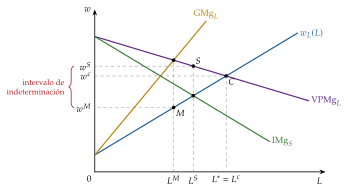
Fuente: elaboración propia a partir de Bowley (1928).
iii) Implicaciones
Con negociación eficiente, la cantidad es la de competencia y el poder de mercado solo decide el reparto; si se negocia solo el precio, se pierde eficiencia. El poder en un lado puede compensar el del otro y acercar el resultado al eficiente.
Hay incentivos a la integración vertical: una sola empresa elegiría la cantidad eficiente sin negociar [ver tema 3.A.15].
c) Extensiones
Doble marginalización (Spengler 1950): si un monopolista vende un factor a otro monopolista que vende el bien final, y lo hace a un precio lineal, cada uno añade su margen. Integrados, venderían la cantidad de monopolio; separados, la cadena produce la mitad, cobra más y gana menos en conjunto.36 La integración, o una tarifa en dos partes entre ellos (II.1.2), mejora a todos, incluidos los consumidores [ver tema 3.A.15]. Es la misma lógica que la de los bienes complementarios del monopolio multiproducto (II.3.1).
Negociación salarial: si el sindicato y la empresa negocian solo el salario y la empresa decide el empleo (modelo del derecho a gestionar), el resultado está sobre la demanda de trabajo y es ineficiente; si negocian salario y empleo, están sobre la curva de contratos, fuera de la demanda, con más empleo: son los contratos eficientes de McDonald y Solow (1981) [ver tema 3.A.27].
d) Evidencia empírica
La negociación colectiva entre sindicatos y empresas, los conflictos de precios entre grandes distribuidores y fabricantes o productores agrícolas, y la negociación del precio de los medicamentos entre un comprador público dominante y un laboratorio con patente son monopolios bilaterales en los que el resultado depende de las alternativas de cada parte, es decir, de sus puntos de desacuerdo.
e) Valoración
La teoría clásica dejaba el monopolio bilateral indeterminado; la teoría de la negociación da una respuesta, pero desplaza la pregunta al poder de negociación y a las alternativas de cada parte, que dependen de instituciones (quién propone, qué pasa si no hay acuerdo) que el modelo de mercado toma como datos.
Recapitulando: el monopsonio aplica en el mercado de factores la misma regla de la elasticidad inversa, ahora con la oferta, y con poder en los 2 lados el resultado ya no lo fijan el coste y la demanda, sino la negociación. Con ello hemos recorrido el poder de mercado del vendedor, del comprador y de los 2 a la vez, y podemos recoger las conclusiones de la exposición.
Conclusión1′
Recapitulación (ideas clave):
En conclusión, el monopolista iguala el ingreso marginal con el coste marginal y carga un margen igual a la inversa de la elasticidad de la demanda: produce menos y cobra más que la competencia, con un coste social que va del triángulo de Harberger a los costes inflados y la búsqueda de rentas (I).
Los desarrollos adaptan esa misma regla y pueden cambiar el juicio de bienestar (II): si discrimina, extrae más excedente (todo en el primer grado, con renta informativa y distorsión abajo en el segundo, con efectos ambiguos en el tercero); si la tecnología es subaditiva, el monopolio es la forma más barata de producir y hay que regularlo, con la regla de Ramsey-Boiteux como Lerner amortiguado; y con varios bienes o plantas internaliza sus relaciones de demanda y de costes.
En el mercado de factores, el monopsonio es su espejo: contrata menos y paga menos de lo que vale el trabajo, sin paro involuntario; y con poder en los 2 lados el resultado lo decide la negociación (III).
Relevancia: es la base teórica de la defensa de la competencia [ver tema 3.B.39], de la regulación de las industrias de red [ver tema 3.A.20] y del debate sobre el salario mínimo cuando el empleador tiene poder de mercado [ver tema 3.A.25]. El poder de mercado ha vuelto al centro del debate con la evidencia de márgenes crecientes (De Loecker, Eeckhout y Unger 2020) y de su relación con el estancamiento de los salarios (Deb et al. 2022).
Extensiones y relación con otras partes del temario: entre los 2 polos están la competencia monopolística [ver tema 3.A.18] y el oligopolio [ver tema 3.A.19]; las barreras de entrada y la amenaza de entrada, que puede disciplinar al monopolista, en la teoría de la empresa [ver tema 3.A.15]; la regulación con información asimétrica y la definición del mercado relevante [ver tema 3.A.20]; los fallos del sector público [ver tema 3.A.23]; la negociación, en la teoría de juegos [ver tema 3.A.14], y la negociación salarial [ver tema 3.A.27].
Opinión: el problema del monopolio no es el número de empresas, sino la ausencia de disciplina. Un monopolio impugnable o bien regulado puede ser la forma más barata de producir, y una patente, el premio de la innovación; uno protegido por barreras cuesta más que su triángulo. Por eso la política adecuada depende del origen del poder: defensa de la competencia frente a las conductas, regulación con incentivos frente a los monopolios naturales y atención al poder de compra en el mercado de trabajo.
Idea final: quien parte y reparte se queda con la mejor parte, pero no con toda: se lo impiden la elasticidad de la demanda, lo que no sabe de sus clientes, la amenaza de entrada y, si enfrente hay otro que también reparte, la negociación. Y lo que se queda no compensa lo que la sociedad pierde.
A. Anexo: regulación y control del monopolio
Con el título actual, la regulación y el control del poder de mercado son materia de otro tema [ver tema 3.A.20]. Aquí se desarrollan los instrumentos pensados para el monopolio natural (tasa de rentabilidad, price cap, menú de contratos, competencia por comparación), que se apoyan en II.2, para las preguntas del tribunal. En el cante basta la regulación básica de II.2.3 y una frase de remisión.
A.1. Idea y justificación
El monopolio suele generar una ineficiencia respecto a la competencia perfecta (I.3), y eso puede justificar su regulación y control. La regulación del monopolio es la intervención de los poderes públicos para fijar el marco en que actúa, normalmente con un esquema de precios y restricciones a la entrada en el mercado.
Su justificación parte de que un monopolio natural puede ser, en ciertos contextos, más eficiente que un mercado con varias empresas (II.2). Pero varios factores lo alejan del óptimo: ineficiencia, menor calidad, menor producción. Y hay críticas a la regulación: puede usarse en beneficio de los propios regulados y perpetuar su posición.
Los modelos de la teoría de la regulación pueden clasificarse así:
teoría tradicional: el regulador solo busca el bienestar social y tiene información completa, así que no hay comportamiento estratégico (A.2);
nueva teoría de la regulación, que levanta esos supuestos por 2 vías:
la información asimétrica en el proceso regulador y el comportamiento estratégico, cuya obra de referencia es la de Laffont y Tirole (1993) (A.3);37
la teoría positiva de la regulación (o de los intereses privados), con los trabajos de Stigler (1971): las teorías anteriores son normativas (explican cómo debería ser la regulación), y esta busca explicar cómo se comportan de hecho quienes participan en ella (A.4).38
A.2. Teoría tradicional de la regulación
III.2.1. Idea
Ante el poder de mercado, se puede regular por el lado de la oferta o por el de la demanda, fomentando la agrupación de los consumidores para mejorar el reparto del excedente. Esto último tiene grandes inconvenientes: el coste de organizar a los consumidores, sus desacuerdos y la imposibilidad de evitar que algunos viajen gratis (free-riders). Por eso nos centramos en la regulación por el lado de la oferta.
III.2.2. Desarrollo: un esquema por etapas
Braeutigam (1989) propone un esquema por etapas que guía la intervención según las circunstancias de cada caso (gráfico 13). Lo completamos con una rama para cuando el regulador no conoce los costes y la demanda.
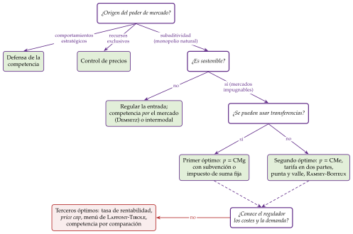
Fuente: elaboración propia a partir de Braeutigam (1989).
Tipo de regulación según el origen del poder de mercado
Comportamientos estratégicos: la medida adecuada es la defensa de la competencia, que sanciona las conductas del monopolista que, en lugar de competir con mejores precios o productos, levantan barreras a la entrada, y prohíbe las concentraciones que crean monopolios.39 Esta intervención debe guiarse por 2 principios:
no condenar de antemano las concentraciones, porque lo que parece anticompetitivo puede aumentar la eficiencia por economías de escala y de alcance o reducir los costes de transacción de los contratos incompletos [ver tema 3.A.15];
partir de la teoría de los mercados impugnables (contestables) (Baumol 1982) [ver tema 3.A.15].
Posesión en exclusiva de recursos (patentes, licencias): la medida adecuada es controlar los precios para evitar subidas bruscas.
Estrechez del mercado: la estructura de costes y la demanda hacen óptimo concentrar la producción en una sola empresa, es decir, hay subaditividad de costes: es un monopolio natural (II.2). Lo primero es saber si es sostenible.
Monopolio natural no sostenible: competencia por el mercado
Si el monopolio natural no es sostenible, la regulación puede garantizar la eficiencia productiva protegiendo su sostenibilidad (regulando la entrada para evitar una competencia destructiva) y reducir la ineficiencia asignativa.40
La idea de Demsetz (1968): aunque solo quepa una empresa en el mercado, puede haber competencia por el mercado, subastando la concesión de su explotación durante un tiempo al licitante que ofrezca el precio más bajo. La subasta da competencia ex ante y su repetición periódica, competencia ex post.41 Problemas:
la posible colusión entre los licitantes;
las ofertas poco competitivas: los licitantes ofrecen precios basados en el coste medio más un margen, que puede ser alto porque incorpora el riesgo de que la concesión no se renueve;42
la duración de la concesión;43
el aprendizaje: si los activos incorporan tecnologías muy especializadas, el primer concesionario tiene ventaja en la siguiente subasta.
Williamson (1976) resume sus límites: con activos específicos y contratos largos e incompletos, la concesión acaba necesitando la misma supervisión que la regulación. Un ejemplo habitual es la concesión de servicios públicos locales, como la recogida de residuos.
Monopolio natural sostenible: eficiencia asignativa frente a viabilidad financiera
Si es sostenible, no conviene desmantelarlo (es eficiente en costes) ni dejarlo sin regular (subiría mucho el precio), y el regulador no debe exigir demasiada eficiencia asignativa: cuanto más se le obliga a comportarse como competitivo, mayores son sus pérdidas. Hay que encontrar un equilibrio entre eficiencia asignativa y viabilidad financiera.
Primer óptimo: \(p=\mathrm{CMg}\). Si el precio igual al coste marginal se alcanza en el tramo decreciente del coste medio, hay pérdidas que cubrir con una subvención de suma fija (II.2.3). Si se alcanza en el tramo creciente, \(\mathrm{CMe}<\mathrm{CMg}=p\) y hay beneficios (gráfico 14), que el regulador puede extraer con un impuesto de suma fija. En este caso hay que regular a la vez el acceso (proteger al monopolio con barreras a la entrada para evitar una competencia destructiva, con ciclos de inversión ineficientes) y el comportamiento (extraer el beneficio extraordinario sin distorsionar, algo difícil en la práctica por la falta de información, o recurrir a los segundos óptimos).
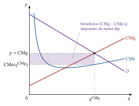
Fuente: elaboración propia a partir de Braeutigam (1989).
Segundos óptimos. Ante la imposibilidad de asegurar la eficiencia asignativa sin subvención, buscan eliminar los beneficios extraordinarios:
Criterio del coste medio: el regulador impone \(p=\mathrm{CMe}\). Limitaciones: necesita conocer los costes, y la empresa tiene incentivos a declararlos mayores (un problema de compatibilidad de incentivos); y, si el precio se revisa para cubrir costes, la empresa no tiene incentivos a reducirlos (ineficiencia dinámica).
Tarifa en dos partes (Coase 1946): cuota fija \(A=\mathrm{CF}/n\) y precio por unidad \(p=\mathrm{CMg}\) (II.2.3). Tiene 2 problemas: supone que la demanda de acceso no depende de la cuota, cuando es previsible cierta sensibilidad, y, si la cuota es alta, puede expulsar a los consumidores de menos renta. Una solución es que la cuota sea distinta para consumidores distintos, por ejemplo según su renta: los de menos renta pagarían cuotas más bajas, compensadas con cuotas mayores al resto (II.2.3).
Tarifas de punta y valle (Boiteux 1949; Steiner 1957). Se aplican cuando la demanda es estacional u horaria, el producto no se puede almacenar (no hay arbitraje temporal) y la capacidad para atender la punta exige inversiones de larga maduración que dejan capacidad ociosa en el valle (turismo, energía, transporte público). Si cada unidad cuesta \(b\) de operación y cada unidad de capacidad \(\beta\), y la capacidad la fija la demanda de la punta (punta firme), la tarifa eficiente es \[p_v=b,\qquad p_p=b+\beta:\] quien usa la capacidad en la punta paga su coste, y en el valle sobra capacidad y solo se cobra el coste de operación (gráfico 15). Si con esos precios la demanda del valle superara a la de la punta (punta desplazada), los 2 periodos comparten el coste de capacidad: con 2 periodos de igual duración, \(p_p+p_v=2b+\beta\), con precios que igualan las 2 demandas a la capacidad. Así el beneficio del monopolista puede ser nulo: el coste de capacidad lo pagan quienes consumen en la punta.44
Precios de Ramsey-Boiteux (II.2.3 y anexo B.5). Con demandas dependientes, además de la elasticidad propia cuentan las cruzadas, como en el monopolio multiproducto (II.3.1): con bienes sustitutivos, el precio regulado de cada bien es mayor, porque subirlo desvía demanda hacia el otro; con bienes complementarios, el precio de uno puede quedar por debajo de su coste marginal para impulsar la demanda del otro, aunque los precios con subsidios cruzados no serán sostenibles (II.2.2).
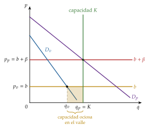
Fuente: elaboración propia a partir de Steiner (1957).
III.2.3. Valoración
La teoría tradicional supone que el regulador tiene toda la información necesaria, sin asimetrías en el proceso regulador, y que su único objetivo es el bienestar social. La nueva teoría de la regulación levanta el primer supuesto (A.3) y la teoría positiva, el segundo (A.4).
A.3. Nueva teoría de la regulación: información asimétrica
Si la información del regulador no basta para restablecer la eficiencia asignativa o eliminar los beneficios extraordinarios, intentará al menos limitarlos. Son los terceros óptimos. Todos los esquemas anteriores tienen 2 problemas: de información, porque el regulador necesita conocer bien los costes, la demanda y las preferencias sociales, y de incentivos, porque, si usa los costes que le declaran las empresas, estas tienen incentivos a declarar costes mayores y a no esforzarse en reducirlos [ver tema 3.A.13].
III.2.4. Regulación de la tasa de rentabilidad y efecto Averch-Johnson
El regulador permite a la empresa una rentabilidad máxima \(s\) sobre su capital, mayor que su coste \(w_K\): \[\begin{array}{rl}\displaystyle \max_{z_K,z_L} & \displaystyle B=p(q)\,q-w_Kz_K-w_Lz_L \\ \text{s.a.} & q=F(z_K,z_L) \\ & \dfrac{p(q)\,q-w_Lz_L}{z_K}\leq s\end{array}\] La restricción equivale a \(B\leq(s-w_K)\,z_K\): el beneficio permitido crece con el capital.
Gráficamente, en el plano \((z_K,B)\) (gráfico 16), el beneficio sin restricción tiene forma de U invertida, porque en algún momento la productividad marginal del capital cae mientras su coste sigue constante, con un máximo en \(z_K^{*}\). El beneficio permitido es la recta \((s-w_K)\,z_K\). Si \(z_K^{*}\) queda por encima de la recta, no está permitido, y la empresa maximiza en \(z_K'>z_K^{*}\): sobrecapitaliza.
Es el efecto Averch-Johnson (Averch y Johnson 1962): con la restricción activa, la empresa elige una combinación de factores con más capital que la de mínimo coste, \[\mathrm{RMST}_{LK}=\frac{\mathrm{PMg}_L}{\mathrm{PMg}_K}=\frac{w_L}{w_K-\frac{\mu}{1-\mu}\,(s-w_K)}>\frac{w_L}{w_K},\] como si el capital fuera más barato de lo que es (anexo B.9), lo que se traduce en costes y precios más altos.
Ventaja: el beneficio y el capital invertido son datos contables que se observan y se auditan con facilidad. Inconvenientes: la sobrecapitalización; se regula como beneficio la remuneración contable del capital, que no es el beneficio económico, y no hay incentivos a reducir costes, porque lo que se ahorra se traslada al precio en la siguiente revisión.
Pese a sus deficiencias, es habitual en los servicios públicos por sus escasas necesidades de información. En España, la retribución de las redes de electricidad y gas se calcula aplicando una tasa de retribución financiera a la base de activos regulada (Comisión Nacional de los Mercados y la Competencia 2019), y las tarifas de la corriente de tracción que ADIF cobra a las empresas ferroviarias se fijan a partir de sus costes, con supervisión de la CNMC (Comisión Nacional de los Mercados y la Competencia 2018b): una regulación por coste del servicio, emparentada con la de tasa de rentabilidad.
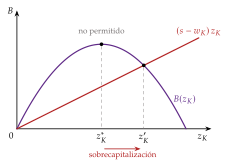
Fuente: elaboración propia a partir de Averch y Johnson (1962).
III.2.5. Precios máximos (price cap, \(\mathrm{IPC}-X\))
La regla nace con el informe de Littlechild (1983) para la privatización de British Telecom, y se extendió después a los demás servicios públicos (gas, agua, electricidad, aeropuertos). Aborda el dilema entre eficiencia asignativa y eficiencia productiva. El mecanismo:
el regulador fija un nivel inicial de ingresos que permite recuperar los «costes razonables» de la empresa;
a partir de esos ingresos, y para una demanda dada, se define un precio medio;
el precio (o una cesta de precios ponderada) evoluciona según la regla \[p_{t+1}\leq p_t\,(1+\mathrm{IPC}_t-X),\] con \(X\) la ganancia de productividad que se exige a la industria, revisada cada pocos años: cuanto mayor es, menos sube el precio, y las ganancias de productividad pasan a los consumidores.45
Da incentivos a reducir costes, porque el ahorro aumenta el beneficio: con un precio máximo, la única forma de ganar más es producir más barato o innovar. Para un \(X\) dado, el incentivo es mayor cuanto más largo es el periodo regulatorio, pero entonces se trasladan menos ganancias a los precios: la duración óptima equilibra los 2 efectos.
Ventajas: incentiva la eficiencia productiva; traslada las mejoras a los consumidores a priori, con ajustes que anticipan mejoras previstas, y a posteriori, al fijar el nuevo límite en cada revisión; es relativamente sencilla de administrar y facilita los reequilibrios tarifarios.
Inconvenientes: hace falta mucha información para fijar \(X\) y el precio inicial; al acercarse el final del periodo, el interés por reducir costes disminuye, y la empresa puede retrasar mejoras hasta el comienzo del ciclo siguiente para disfrutarlas más tiempo; y la calidad puede deteriorarse para ahorrar costes.
En España, la cuota de abono de Telefónica estuvo sujeta a una regla \(\mathrm{IPC}-X\) hasta su liberalización en 2012 (Comisión Nacional de los Mercados y la Competencia 2018a). Hoy el ejemplo vivo son las tarifas de Aena: el Documento de Regulación Aeroportuaria (DORA) fija un ingreso máximo por pasajero que evoluciona con un componente X durante 5 años; el DORA 2027-2031 se aprobó en septiembre de 2026 (Dirección General de Aviación Civil 2026). La Ley 2/2015 de desindexación, desarrollada por el Real Decreto 55/2017, desvincula del IPC las revisiones de precios del sector público (Jefatura del Estado 2015; Ministerio de Hacienda y Función Pública 2017): por eso una regla \(\mathrm{IPC}-X\) pura choca con ella y los reguladores usan índices de costes propios.
III.2.6. Mecanismo de Loeb y Magat
El regulador deja al monopolista fijar el precio y le paga como subvención todo el excedente del consumidor que genera (Loeb y Magat 1979). Su objetivo pasa a ser el excedente total, así que elige \(p=\mathrm{CMg}\) y produce la cantidad competitiva sin que el regulador conozca sus costes.
Inconvenientes: el regulador tiene que conocer la demanda para calcular la subvención, y el monopolista se queda con todo el excedente, una redistribución difícil de justificar. Se puede corregir subastando el derecho a recibir ese esquema, de modo que la puja devuelva la renta al Estado.
III.2.7. Menú de contratos de Laffont y Tirole
a) Idea
El modelo de Laffont y Tirole (1986) aplica la teoría de la agencia a la regulación y la contratación pública: el principal (el regulador) contrata a un agente (la empresa) que sabe más que él sobre sus costes (Laffont y Tirole 1993).
b) Modelo
i) Supuestos
El coste observado es \(C=\beta-e\), con \(\beta\) la eficiencia intrínseca de la empresa (información oculta: baja, \(\underline{\beta}\), con probabilidad \(\nu\), o alta, \(\overline{\beta}\)) y \(e\) el esfuerzo en reducir costes (acción oculta), que le cuesta \(\psi(e)\), creciente y convexa. El regulador observa \(C\), pero no \(\beta\) ni \(e\): no sabe si un coste bajo se debe a la suerte de ser eficiente o al esfuerzo. Reembolsa el coste y paga una transferencia \(t\), que cuesta a la sociedad \(1+\lambda\) por euro (\(\lambda\), coste sombra de los fondos públicos).46 La empresa obtiene \(U=t-\psi(e)\) y debe aceptar el contrato (\(U\geq 0\)).
ii) Desarrollo
Información completa: el regulador exige el esfuerzo eficiente, \(\psi'(e^{*})=1\) (el último euro de esfuerzo ahorra un euro de coste), y no deja rentas.
Información asimétrica: la empresa eficiente puede hacerse pasar por ineficiente esforzándose menos y obtener el mismo coste; para que no lo haga hay que dejarle una renta informativa, que crece con el esfuerzo que se pida a la ineficiente. En el óptimo, \[\psi'(\underline{e})=1,\qquad \psi'(\overline{e})=1-\frac{\lambda}{1+\lambda}\cdot\frac{\nu}{1-\nu}\cdot\Phi'(\overline{e})<1,\] con \(\Phi(e)=\psi(e)-\psi(e-\Delta\beta)\) la renta de la empresa eficiente y \(\Delta\beta=\overline{\beta}-\underline{\beta}\). No hay distorsión arriba (la eficiente hace el esfuerzo óptimo) y se pide menos esfuerzo a la ineficiente para reducir la renta de la eficiente: el mismo resultado que la discriminación de segundo grado (II.1.2).
Puesta en práctica: un menú de contratos lineales, \(t(C)=a-b\,(C-C^a)\), con \(C^a\) el coste anunciado y \(b\in[0,1]\) la parte del sobrecoste que paga la empresa (la potencia del incentivo). La empresa eficiente elige el de precio fijo (\(b=1\): se queda con todo lo que ahorre) y la ineficiente uno de baja potencia, cercano al de coste incrementado (\(b\) pequeño: se le reembolsa casi todo el coste).
iii) Implicaciones
El dilema de la regulación con información asimétrica es entre incentivos y extracción de rentas. Los contratos de alta potencia (price cap) dan incentivos pero dejan rentas; los de baja potencia (coste incrementado, tasa de rentabilidad), al revés.
Contratos de coste incrementado y de precio fijo (ICEX-CECO, s. f.). Las medidas de regulación anteriores muestran la importancia de la información; su constatación impulsó en los años 80 la nueva teoría de la regulación, cuyas aportaciones recogen Laffont y Tirole (1993). La regulación se ve como un mecanismo de incentivos en el marco de la teoría de la agencia, con el regulador como principal y la empresa como agente, en situaciones de selección adversa (revelación de costes) y de riesgo moral (incentivos al esfuerzo) [ver tema 3.A.13]. El regulador tiene que ponderar la eficiencia productiva, estática y dinámica, con las rentas informativas que deja a la empresa: un precio igual al coste marginal sin rentas maximiza el bienestar estático, pero no da incentivos a reducir costes, y puede convenir sacrificar parte del excedente del consumidor hoy, que pasa a ser renta informativa de la empresa, a cambio de reducciones de costes futuras.
Se puede representar con un precio lineal en el coste de la empresa,47 \[p=b\cdot F+(1-b)\cdot C,\] con \(F\) una cuantía fija y \(C\) el coste, que depende del esfuerzo de la empresa y de factores aleatorios que el regulador no observa; \(b\) es la potencia del incentivo, la misma del menú anterior. Cuanto mayor es \(b\), más incentivos a reducir costes, pero esas ganancias van más al beneficio de la empresa y menos al consumidor. Los 2 casos extremos:
\(b=0\), coste incrementado (cost plus): \(p=C\), el regulador cubre todos los costes. No da ningún incentivo a reducir costes, y cualquier reducción exógena de costes pasa al precio. Solo es aceptable cuando la renta que dejaría un contrato de más potencia es muy grande (empresas muy ineficientes o mucha incertidumbre sobre los costes). Es la regulación por coste del servicio que dominó los servicios públicos hasta los años 80, con precios basados en costes históricos. Un periodo regulatorio más largo amortigua la falta de incentivos: mientras el precio no cambia, la empresa gana si reduce costes.
\(b=1\), precio fijo (fixed price): la empresa soporta todo el riesgo de costes y tiene los máximos incentivos a ser eficiente, pero las reducciones de costes van al beneficio, no al precio. Es la regulación por precios máximos, \(\mathrm{IPC}-X\), \(p_{t+1}\leq p_t\,(1+\mathrm{IPC}_t-X)\), con \(X\) la mejora de productividad esperada, que traslada parte de las ganancias a los consumidores; cuanto más largo el periodo, más incentivos y menos traslado. Sus límites: hace falta mucha información para fijar \(X\) y el precio inicial; si este es muy bajo, la empresa tendrá dificultades y buscará renegociar; si es muy alto, tendrá beneficios elevados, y el regulador que quiera extraerlos antes de que venza el periodo pagará un coste de credibilidad.
III.2.8. Efecto trinquete y desfase regulatorio
Efecto trinquete (ratchet): si el regulador usa lo que observa hoy para fijar el objetivo de mañana (por ejemplo, baja el precio permitido cuando la empresa reduce costes), la empresa sabe que cada mejora se le quitará en la siguiente revisión, y no la hace o la oculta: un coste bajo hoy se convierte en una exigencia mayor mañana (Weitzman 1980). Sin un compromiso del regulador a largo plazo, a las empresas eficientes les conviene parecer ineficientes al principio, y el regulador no puede separar los tipos (Freixas, Guesnerie y Tirole 1985; Laffont y Tirole 1988).
Desfase regulatorio (regulatory lag): es el tiempo entre 2 revisiones de las tarifas, durante el que el precio no cambia aunque cambien los costes. Mientras dura, la empresa se queda con lo que ahorre: da incentivos a reducir costes incluso con regulación de la tasa de rentabilidad, y cuanto más largo, más incentivos y menos traslado a los consumidores (Baumol y Klevorick 1970; Joskow 1974).
III.2.9. Competencia por comparación (yardstick competition)
a) Idea
Si hay varias empresas reguladas parecidas que operan en zonas distintas (distribuidoras de electricidad o de agua, hospitales), el regulador puede fijar el precio de cada una a partir de los costes de las demás, no de los suyos (Shleifer 1985). Así crea entre monopolios locales una competencia que no existe en el mercado, y resuelve el problema de la revelación de costes.
b) Modelo
i) Supuestos
\(N\) empresas idénticas, cada una con coste unitario \(c_i\) que puede reducir invirtiendo \(R(c_i)\), con \(R'<0\).
ii) Desarrollo
El regulador fija a la empresa \(i\) el precio y la transferencia \[p_i=\bar{c}_{-i}\equiv\frac{1}{N-1}\sum_{j\neq i}c_j,\qquad T_i=\bar{R}_{-i}\equiv\frac{1}{N-1}\sum_{j\neq i}R(c_j).\] Como la empresa \(i\) no influye en su propio precio, maximiza \((\bar{c}_{-i}-c_i)\,q(\bar{c}_{-i})+T_i-R(c_i)\) eligiendo \(c_i\), y la condición de primer orden es \(-R'(c_i)=q(\bar{c}_{-i})\): invierte hasta que el último euro ahorra un euro de coste. En el equilibrio simétrico todas eligen el coste eficiente, el precio es igual al coste y no hay rentas.
iii) Implicaciones
La empresa no gana nada sesgando su declaración, porque inflar sus costes solo sube el precio de las demás, y si sus costes están por encima de la media de sus pares solo se le retribuye con arreglo a esa media, así que reducirlos le compensa: da incentivos de precio fijo sin las rentas de un price cap mal calibrado.
c) Evidencia empírica
La comparación exige medir la eficiencia relativa con el análisis envolvente de datos (DEA) o con la frontera estocástica [ver tema 3.A.12]. En Alemania, el regulador fija los ingresos máximos de las distribuidoras eléctricas comparando su eficiencia con los 2 métodos, se queda con el valor más favorable (con un mínimo del 60 %) y exige eliminar la ineficiencia durante el periodo regulatorio (Bundesnetzagentur 2026; Bundesministerium der Justiz 2007); Jamasb y Pollitt (2001) repasan la experiencia internacional en electricidad.
d) Valoración
Requisitos y problemas: empresas comparables (si no, hay que corregir las diferencias observables, por regresión o con fronteras de eficiencia) y el riesgo de colusión entre ellas, que pueden ponerse de acuerdo en no reducir costes (Baldwin, Cave y Lodge 2012).
III.2.10. Evidencia empírica sobre la regulación por incentivos
Desde los años 80, la regulación de las redes ha pasado de la tasa de rentabilidad a esquemas de incentivos (precios o ingresos máximos, comparación de eficiencia, reparto de ganancias), primero en el Reino Unido y después en la mayoría de los países europeos. Joskow (2014) concluye, en su repaso de la distribución y el transporte de electricidad, que estos esquemas han reducido los costes de operación, pero que exigen vigilar la calidad del servicio y las necesidades de inversión.
A.4. Teoría positiva de la regulación
Las teorías anteriores son normativas: dicen cómo debería regular un regulador benevolente. La teoría positiva pregunta cómo se regula de hecho, y trata la regulación como un bien que se demanda y se ofrece [ver tema 3.A.20].
Los grupos de presión son conjuntos de individuos con intereses comunes que se organizan para influir en las decisiones públicas a favor de sus intereses privados (búsqueda de rentas).48 Generan ineficiencias por 2 vías: se dedican recursos a conseguir el favor de los poderes públicos en lugar de a producir, y se toman decisiones favorables a esos grupos que no coinciden con las de la colectividad. Ejemplos: sindicatos y organizaciones empresariales.
Stigler (1971) sostiene que, como regla general, la industria adquiere la regulación y esta se diseña y aplica sobre todo en su beneficio: es la captura del regulador. Las empresas reguladas son pocas, tienen mucho en juego y se organizan con facilidad; los consumidores son muchos, cada uno con poco en juego. El regulador puede no ser benevolente y responder a los intereses del grupo, lo que a su vez incentiva a las empresas a influir en el diseño de la regulación. Laffont y Tirole (1991) formalizan la captura como un problema de agencia.
Es la lógica de la acción colectiva de Olson (1965): el beneficio de presionar es un bien público para los miembros del grupo, que tienen incentivos a viajar gratis, y el problema es menor en los grupos pequeños. Por eso solo los grupos pequeños suelen constituirse en lobbies, y la redistribución puede ir de los grupos desorganizados a los organizados [ver tema 4.B.2].
Peltzman (1976) añade que el regulador reparte las rentas entre productores y consumidores para maximizar sus apoyos, y Becker (1983), que la competencia entre grupos de presión favorece las intervenciones que menos eficiencia destruyen. Los recursos gastados en conseguir rentas son el coste de la búsqueda de rentas de I.3.
Material complementario sobre la teoría de Stigler:
ProMarket, «Assessing George Stigler’s Economic Theory of Regulation» (ProMarket (Stigler Center, Universidad de Chicago) 2021): https://www.
promarket. org/ 2021/ 07/ 27/ assessing- george- stiglers- economic- theory- of- regulation/ Stigler Center, «Who Will Regulate the Regulators: Stigler 50 Years Later» (Stigler Center (Universidad de Chicago) 2021): https://www.
youtube. com/ watch? v= lhD5s- 4v3oM
A.5. Instituciones regulatorias
Los Estados combinan varios instrumentos:
la legislación, que establece directamente la regulación, pero choca con la falta de cualificación técnica de los legisladores, su vulnerabilidad ante los grupos organizados y el peso de las consideraciones de corto plazo;
los contratos de concesión (franquicias), que venden a las empresas el derecho a monopolizar, de modo que lo que se cobra por la venta compense las rentas del monopolista; su duración plantea un dilema: si es corta, el concesionario no invierte o lo hace pagar en el precio; si es larga, se pierde la presión de la competencia por el mercado (A.2);
las comisiones reguladoras independientes, con pocos miembros que aprueban las medidas regulatorias con el apoyo de equipos técnicos; más independencia de los poderes ejecutivo y legislativo suele asociarse a mejores resultados;
la provisión directa por el sector público, habitual en Europa antes de las privatizaciones de los años 80 y 90 y hoy con pocos ejemplos.
En España, la Comisión Nacional de los Mercados y la Competencia (CNMC), creada por la Ley 3/2013, reúne la defensa de la competencia y la supervisión de los sectores regulados (energía, telecomunicaciones, transporte, servicios postales y audiovisuales) (Jefatura del Estado 2013) [ver tema 3.B.39].
A.6. Valoración
No hay regulación sin efectos indeseados: toda intervención altera los incentivos, y hay que comparar los fallos del mercado con los de la regulación, como subraya la teoría positiva [ver tema 3.A.23].
B. Anexo: derivaciones
B.1. Condición de segundo orden del monopolista
De \(B(q)=I(q)-C(q)\), con \(I(q)=p(q)\,q\), la condición de segundo orden es \[B''(q^M)=\frac{d^2I}{dq^2}-\frac{d^2C}{dq^2}=\mathrm{IMg}'(q^M)-\mathrm{CMg}'(q^M)<0\ \Longleftrightarrow\ \mathrm{IMg}'(q^M)<\mathrm{CMg}'(q^M).\] Las pendientes se comparan con su signo.
Con CMg creciente, \(\mathrm{CMg}'>0\), y con IMg decreciente, la condición se cumple siempre.
Con CMg decreciente, se cumple si el CMg cae más despacio que el IMg, es decir, si corta al IMg desde abajo: a la izquierda de \(q^M\) el IMg supera al CMg y a la derecha queda por debajo (gráfico 17, derecha). Si el CMg cae más deprisa que el IMg y lo corta desde arriba, ese punto es un mínimo del beneficio: a su derecha el IMg supera al CMg y conviene producir más.
A diferencia de la empresa competitiva, que solo puede maximizar en el tramo creciente del CMg (su IMg es horizontal), el monopolista puede hacerlo también en el decreciente. Si la función de beneficio es estrictamente cuasicóncava, la cantidad que maximiza el beneficio es única.\(\blacksquare\)
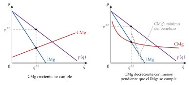
Fuente: elaboración propia a partir de Varian (1992, cap. 14).
B.2. Condición de viabilidad a corto y largo plazo
Corto plazo. Con costes fijos \(\mathrm{CF}\), \(B(q^M)=\big[p(q^M)-\mathrm{CVMe}(q^M)\big]\,q^M-\mathrm{CF}\), y cerrar da \(B(0)=-\mathrm{CF}\). Producir es mejor que cerrar si \(B(q^M)\geq B(0)\), es decir, si \(p(q^M)\geq\mathrm{CVMe}(q^M)\): las pérdidas no pueden superar el coste fijo.
Largo plazo. Sin costes fijos, cerrar da \(B(0)=0\) y producir exige \(B(q^M)\geq 0\), es decir, \(p(q^M)\geq\mathrm{CMe}(q^M)\).
Dónde se evalúa. La condición se comprueba en \(q^M\). Es equivalente a que la demanda pase por encima del coste medio en algún punto: si existe un \(\hat{q}\) con \(p(\hat{q})\geq\mathrm{CMe}(\hat{q})\), entonces \(B(\hat{q})\geq 0\) y, como \(q^M\) maximiza \(B\), \(B(q^M)\geq B(\hat{q})\geq 0\); y al revés, si \(p(q^M)\geq\mathrm{CMe}(q^M)\), la demanda está por encima del CMe en \(q^M\). Lo que no vale es exigir que el precio de monopolio supere el mínimo del CMe, porque el monopolista no produce allí (gráfico 18).\(\blacksquare\)
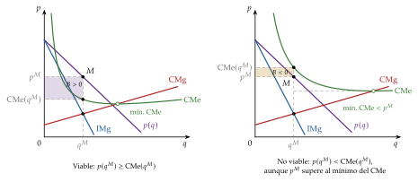
Fuente: elaboración propia a partir de Koutsoyiannis (1979).
B.3. Discriminación de segundo grado con 2 tipos
Qué restricciones se saturan en el problema (6):
\(\mathrm{PC}_2\) se deduce de \(\mathrm{IC}_2\) y \(\mathrm{PC}_1\): \(t_2u(q_2)-T_2\geq t_2u(q_1)-T_1\geq t_1u(q_1)-T_1\geq 0\), porque \(t_2>t_1\) y \(u(q_1)\geq 0\). Sobra.
\(\mathrm{PC}_1\) se satura: si sobrara, el monopolista subiría \(T_1\) y \(T_2\) en la misma cuantía sin violar ninguna restricción de incentivos y ganaría más.
\(\mathrm{IC}_2\) se satura: si sobrara, subiría \(T_2\).
\(\mathrm{IC}_1\) sobra en la solución: sumando las 2 restricciones de incentivos, \((t_2-t_1)\,[u(q_2)-u(q_1)]\geq 0\), es decir, \(q_2\geq q_1\) (monotonía); con \(\mathrm{IC}_2\) saturada, \(\mathrm{IC}_1\) equivale a esa misma desigualdad, que se cumple porque \(q_2>q_1\) (abajo).
Pagos: de \(\mathrm{PC}_1\) y \(\mathrm{IC}_2\), \(T_1=t_1u(q_1)\) y \(T_2=t_2u(q_2)-t_2u(q_1)+T_1=t_2u(q_2)-(t_2-t_1)\,u(q_1)\).
Problema reducido: \[\max_{q_1,q_2}\ \pi\,[t_1u(q_1)-c\,q_1]+(1-\pi)\,[t_2u(q_2)-(t_2-t_1)\,u(q_1)-c\,q_2].\]
Condiciones de primer orden: \[\frac{\partial}{\partial q_2}:\ (1-\pi)\,[t_2u'(q_2)-c]=0\ \Rightarrow\ t_2u'(q_2)=c;\] \[\frac{\partial}{\partial q_1}:\ \pi\,[t_1u'(q_1)-c]-(1-\pi)\,(t_2-t_1)\,u'(q_1)=0\ \Rightarrow\ t_1u'(q_1)\left[1-\frac{1-\pi}{\pi}\cdot\frac{t_2-t_1}{t_1}\right]=c .\]
Si el corchete es positivo, \(t_1u'(q_1)>c\): el precio marginal implícito del tipo bajo, \(t_1u'(q_1)\), supera al coste marginal y \(q_1\) es menor que la cantidad eficiente. Como \(u'(q_1)>c/t_1>c/t_2=u'(q_2)\) y \(u'\) es decreciente, \(q_1<q_2\), y se cumple \(\mathrm{IC}_1\). Si el corchete es nulo o negativo, \(\pi\,t_1\leq(1-\pi)\,(t_2-t_1)\), la solución es \(q_1=0\): se excluye al tipo bajo y al alto se le extrae todo su excedente. Las condiciones de segundo orden se cumplen por la concavidad de \(u\).\(\blacksquare\)
Intuición del margen: reducir un poco \(q_1\) cuesta al monopolista, en cada consumidor de tipo bajo, el excedente de la unidad perdida, \(t_1u'(q_1)-c\) (ponderado por \(\pi\)), y le ahorra, en cada consumidor de tipo alto, la renta informativa de esa unidad, \((t_2-t_1)\,u'(q_1)\) (ponderada por \(1-\pi\)). La condición de primer orden iguala las 2 cosas. Por ejemplo, subir el precio marginal del tipo bajo hace perder algo con los bajos, pero se gana con todos los altos, a los que se puede cobrar más sin que imiten.
Caso habitual en el test: con \(u(q)=[1-(1-q)^2]/2\), \(u'(q)=1-q\), la demanda del tipo \(i\) es \(p=t_i(1-q)\), es decir, \(q_i(p)=1-p/t_i\), y su excedente a un precio \(p\) es \(\mathrm{EC}_i(p)=(t_i-p)^2/2t_i\). Con discriminación perfecta, \(p_i=c\) y cuotas \(A_i=\mathrm{EC}_i(c)\). Con el menú óptimo, \(q_2=1-c/t_2\) y \(q_1=1-c\big/\big[t_1-\frac{1-\pi}{\pi}\,(t_2-t_1)\big]\).
B.4. Índice de Lerner del monopolio multiproducto
Con demandas \(q_j(\vec{p})\) y costes separables, \(B=\sum_jp_j\,q_j(\vec{p})-\sum_jC_j(q_j)\). La condición de primer orden respecto a \(p_i\) es \[q_i+\sum_j\big(p_j-\mathrm{CMg}_j\big)\frac{\partial q_j}{\partial p_i}=0 .\]
Separando el término \(j=i\) y dividiendo por \(-p_i\,\partial q_i/\partial p_i>0\): \[\frac{p_i-\mathrm{CMg}_i}{p_i}=\frac{-q_i}{p_i\,\partial q_i/\partial p_i}-\sum_{j\neq i}\big(p_j-\mathrm{CMg}_j\big)\frac{\partial q_j/\partial p_i}{p_i\,\partial q_i/\partial p_i}.\]
El primer término es \(1/|\varepsilon_{q_i,p_i}|\). En el segundo, \(\partial q_j/\partial p_i=\varepsilon_{q_j,p_i}\,q_j/p_i\) y \(p_i\,\partial q_i/\partial p_i=\varepsilon_{q_i,p_i}\,q_i=-|\varepsilon_{q_i,p_i}|\,q_i\), así que \[\mathcal{L}_i=\frac{1}{|\varepsilon_{q_i,p_i}|}+\sum_{j\neq i}\frac{\big(p_j-\mathrm{CMg}_j\big)\,q_j}{p_i\,q_i}\cdot\frac{\varepsilon_{q_j,p_i}}{|\varepsilon_{q_i,p_i}|},\] que es (17). El término cruzado lleva la elasticidad de la demanda del bien \(j\) respecto al precio del bien \(i\).\(\blacksquare\)
B.5. Precios de Ramsey-Boiteux
Con demandas independientes \(q_i(p_i)\), el regulador maximiza \(\mathrm{EC}(\vec{p})+B(\vec{p})\) sujeto a \(B(\vec{p})\geq 0\). Con el multiplicador \(\lambda\geq 0\) de la restricción, maximiza el problema penalizado \(\mathrm{EC}(\vec{p})+(1+\lambda)\,B(\vec{p})\), con \(\partial\mathrm{EC}/\partial p_i=-q_i\) (la pérdida de excedente de una subida del precio es la cantidad comprada) y \(\partial B/\partial p_i=q_i+(p_i-\mathrm{CMg}_i)\,q_i'(p_i)\).
Condición de primer orden: \(-q_i+(1+\lambda)\big[q_i+(p_i-\mathrm{CMg}_i)\,q_i'\big]=0\), es decir, \((1+\lambda)\,(p_i-\mathrm{CMg}_i)\,q_i'=-\lambda\,q_i\).
Dividiendo por \((1+\lambda)\,p_i\,q_i'\): \[\frac{p_i-\mathrm{CMg}_i}{p_i}=\frac{\lambda}{1+\lambda}\cdot\frac{-q_i}{p_i\,q_i'}=\frac{\lambda}{1+\lambda}\cdot\frac{1}{|\varepsilon_{q_i,p_i}|}.\] \(\blacksquare\)
Si \(\lambda\to\infty\), el regulador solo atiende al beneficio y se obtiene la regla del monopolio, \(\mathcal{L}_i=1/|\varepsilon_{q_i,p_i}|\); si \(\lambda=0\), \(p_i=\mathrm{CMg}_i\). El cociente de los márgenes de 2 bienes es inverso al de sus elasticidades: \(\mathcal{L}_i/\mathcal{L}_j=|\varepsilon_{q_j,p_j}|/|\varepsilon_{q_i,p_i}|\).
B.6. Sostenibilidad del monopolio natural con reacción del incumbente
En el gráfico 7, \(\mathrm{CMe}_1\) es el coste medio de una empresa (en U) y \(\mathrm{CMe}_{1+2}\) el de 2 empresas que se reparten la producción a partes iguales. Entre el origen y \(q^1\) hay subaditividad; entre \(q^0\) (mínimo de \(\mathrm{CMe}_1\)) y \(q^1\), sin economías de escala.
Si la demanda corta a \(\mathrm{CMe}_1\) antes de \(q^0\), el monopolio natural es deseable y sostenible: para entrar, un competidor tendría que cobrar menos que el incumbente, y en el tramo decreciente de \(\mathrm{CMe}_1\) eso es \(p<\mathrm{CMe}_1\): tendría pérdidas.
Si la corta entre \(q^0\) y \(q^1\), es deseable, pero la sostenibilidad depende de la posición de la demanda frente a \(\mathrm{CMe}_{1+2}\):
Demanda \(D^{*}\), siempre por debajo de \(\mathrm{CMe}_{1+2}\). El incumbente produce \(q^{*}\) a \(p^{*}\), con beneficio nulo. Si entra otra empresa, con un precio entre \(p^0\) y \(p^{*}\), el incumbente no puede acomodarla repartiéndose la producción, porque \(\mathrm{CMe}_{1+2}\) queda siempre por encima de la demanda y las 2 tendrían pérdidas. Solo le queda luchar bajando el precio (y la cantidad) hasta \(p^0\) y \(q^0\), con beneficio nulo para él y pérdidas para el entrante. El entrante anticipa esta secuencia y no entra: el monopolio natural es sostenible y produce \(q^{*}\) a \(p^{*}\).
Demanda \(D'\), que en algún tramo supera a \(\mathrm{CMe}_{1+2}\). El incumbente produce \(q'\) a \(p'\), con beneficio nulo. Si entra otra empresa, con un precio entre \(p^0\) y \(p'\), el incumbente empieza bajando el precio y la cantidad, pero a partir de cierto punto le compensa acomodar la entrada y repartirse el mercado a un precio por encima de \(\mathrm{CMe}_{1+2}\), con beneficios, en lugar de seguir luchando con beneficio nulo (\(p=\mathrm{CMe}_1\)). El entrante lo anticipa y entra: el monopolio natural no es sostenible, y las 2 empresas producen donde el beneficio conjunto es máximo, donde la distancia entre la demanda y \(\mathrm{CMe}_{1+2}\) es mayor.\(\blacksquare\)
La mayoría de los manuales suponen que el incumbente no reacciona (mantiene su precio y atiende la demanda que deja el entrante) y concluyen que el monopolio natural deja de ser sostenible en cuanto aparecen deseconomías de escala, a partir de \(q^0\) (Baumol, Panzar y Willig 1982). Con reacción del incumbente, la frontera está en \(\mathrm{CMe}_{1+2}\) (Segura 1996). En los 2 casos, la existencia y la sostenibilidad dependen tanto de los costes como de la demanda: la subaditividad es necesaria para la sostenibilidad, y las economías de escala en el tramo relevante bastan para las 2.
B.7. Poder de mercado en el bien y en el trabajo: los 4 casos y el sindicato
Una empresa con poder de monopolio en el bien (demanda inversa \(p(q)\)) y de monopsonio en el trabajo (oferta inversa \(w_L(L)\)), con el capital fijo en \(\overline{K}\), resuelve \[\begin{array}{rl}\displaystyle \max_{L} & \displaystyle B(L)=p\big(F(L,\overline{K})\big)\,F(L,\overline{K})-w_L(L)\,L-w_K\overline{K} \\ \text{s.a.} & L\geq 0\end{array}\]
La condición de primer orden iguala el ingreso del producto marginal con el gasto marginal: \[\underbrace{\big[p+p'(q)\,q\big]\,\mathrm{PMg}_L}_{\mathrm{IPMg}_L}=\underbrace{w_L(L)+w_L'(L)\,L}_{\mathrm{GMg}_L}\ \Longleftrightarrow\ p\,\mathrm{PMg}_L\left(1-\frac{1}{|\varepsilon_{q,p}|}\right)=w_L(L)\left(1+\frac{1}{\varepsilon_{L,w_L}}\right).\]
Con competencia en el bien, \(|\varepsilon_{q,p}|\to\infty\) y el primer miembro es \(\mathrm{VPMg}_L\); con competencia en el trabajo, \(\varepsilon_{L,w_L}\to\infty\) y el segundo es \(w_L\). De ahí los 4 casos de la tabla 2. El IPMg queda por debajo del VPMg, porque vender más baja el precio de todas las unidades, y el GMg por encima de la oferta, porque contratar más sube el salario de todos. El salario lo da siempre la oferta de trabajo en la cantidad contratada.\(\blacksquare\)
Sindicato monopolista frente a empresas precio-aceptantes. El sindicato maximiza la renta de sus miembros, \(U_S=w\,L-v(L)\), sobre la demanda de trabajo \(w^D(L)=\mathrm{VPMg}_L\): \[w^D(L)+w^{D\prime}(L)\,L=v'(L)\ \Longleftrightarrow\ w^D(L)\left(1-\frac{1}{|\varepsilon_{L^D,w}|}\right)=w_L(L).\] Su ingreso marginal queda por debajo de la demanda de trabajo, porque ofrecer más trabajo baja el salario de todos. El empleo es menor y el salario mayor que en competencia, y al salario fijado hay más gente dispuesta a trabajar que puestos: hay paro involuntario. Si además la empresa es monopsonista, es el monopolio bilateral (III.2).\(\blacksquare\)
B.8. Solución de Nash del monopolio bilateral
Tomando logaritmos en (22), se maximiza \(\gamma\ln\big[w\,L-v(L)-U_S^0\big]+(1-\gamma)\ln\big[p\,F(L)-w\,L-B^0\big]\). Llamamos \(S\equiv p\,F(L)-v(L)-U_S^0-B^0\) al excedente neto que se reparten.
Condición de primer orden respecto a \(w\): \(\dfrac{\gamma\,L}{U_S-U_S^0}=\dfrac{(1-\gamma)\,L}{B-B^0}\); como \((U_S-U_S^0)+(B-B^0)=S\), queda \(U_S-U_S^0=\gamma\,S\) y \(B-B^0=(1-\gamma)\,S\).
Condición de primer orden respecto a \(L\): \(\dfrac{\gamma\,\big[w-v'(L)\big]}{U_S-U_S^0}+\dfrac{(1-\gamma)\,\big[p\,F'(L)-w\big]}{B-B^0}=0\). Sustituyendo los denominadores, \(\big[w-v'(L)\big]+\big[p\,F'(L)-w\big]=0\), es decir, \[p\,F'(L^{*})=v'(L^{*})=w_L(L^{*}):\] el empleo maximiza el excedente conjunto, coincide con el competitivo y no depende de \(\gamma\).
El salario sale de \(U_S-U_S^0=\gamma\,S\): \(w^{*}L^{*}=v(L^{*})+U_S^0+\gamma\,\big[p\,F(L^{*})-v(L^{*})-U_S^0-B^0\big]\).\(\blacksquare\)
B.9. Efecto Averch-Johnson
Sea \(I(z_K,z_L)=p\big(F(z_K,z_L)\big)\,F(z_K,z_L)\) el ingreso, con \(I_i=\mathrm{IMg}\cdot\mathrm{PMg}_i\). Con el multiplicador \(\mu\) de la restricción de rentabilidad, el problema penalizado es \(I-w_Kz_K-w_Lz_L-\mu\,\big[I-w_Lz_L-s\,z_K\big]\); con la restricción activa, \(0<\mu<1\).
Condición de primer orden respecto a \(z_L\): \((1-\mu)\,I_L-(1-\mu)\,w_L=0\Rightarrow I_L=w_L\).
Condición de primer orden respecto a \(z_K\): \((1-\mu)\,I_K-w_K+\mu\,s=0\Rightarrow I_K=w_K-\dfrac{\mu}{1-\mu}\,(s-w_K)\).
Dividiendo, \(\dfrac{\mathrm{PMg}_L}{\mathrm{PMg}_K}=\dfrac{I_L}{I_K}=\dfrac{w_L}{w_K-\frac{\mu}{1-\mu}(s-w_K)}\). Con \(s>w_K\) y \(0<\mu<1\), el denominador es menor que \(w_K\): la empresa usa capital hasta donde su productividad marginal es menor que la que exige el mínimo coste. Sobrecapitaliza.\(\blacksquare\)
C. Anexo: aspectos para el test y preguntas del tribunal
Preguntas tipo test del primer ejercicio: simulador de test.
Demanda lineal \(p=a-bq\) y CMg constante \(c\): \(\mathrm{IMg}=a-2bq\) (misma ordenada en el origen y doble pendiente); \(q^M=(a-c)/2b\), \(p^M=(a+c)/2\), \(B=(a-c)^2/4b\) sin costes fijos, y \(\mathrm{PIE}=(a-c)^2/8b=B/2\). Con un impuesto unitario \(t\), \(p^M\) sube \(t/2\).
Demanda isoelástica \(q=A\,p^{-\eta}\), con \(|\varepsilon_{q,p}|=\eta>1\), y CMg constante \(c\): \(p^M=\frac{\eta}{\eta-1}\,c\). Ejemplo: con \(q=p^{-2}\) y \(C(q)=5q+10\), \(p^M(1-1/2)=5\), así que \(p^M=10\) y \(q^M=1/100\) (en competencia, \(p=5\) y \(q=1/25\)). Con ese coste fijo el beneficio es negativo, \(B=0{,}1-0{,}05-10<0\): el monopolista solo produciría a corto plazo, porque \(p^M>\mathrm{CVMe}=5\). Se obtiene igual con \(B(q)=\sqrt{q}-5q-10\), con \(\mathrm{IMg}=\mathrm{CMg}\) o con la regla del margen. Con demanda isoelástica, un impuesto unitario sube el precio en más que el impuesto.
Tramo elástico: el monopolista nunca produce donde \(|\varepsilon_{q,p}|\leq 1\) si \(\mathrm{CMg}>0\).
Tarifa en dos partes con un solo tipo (\(n\) consumidores iguales): \(p=c\) y \(A=\mathrm{EC}(c)\); el monopolista se queda con todo el excedente, como en el primer grado.
Tarifa en dos partes común con 2 tipos (\(n_1\) bajos, \(n_2\) altos), sin excluir a nadie: \(A=\mathrm{EC}_1(p)\) y \(B=(n_1+n_2)\,A+(p-c)\,[n_1q_1(p)+n_2q_2(p)]\), que se maximiza en \(p\) (con 2 consumidores, \(B=2A+(p-c)(q_1+q_2)\)); el resultado es \(p>c\). Hay que compararlo con la alternativa de excluir a los bajos: \(p=c\) y \(A=\mathrm{EC}_2(c)\), con beneficio \(n_2\,\mathrm{EC}_2(c)\).
Segundo grado con 2 tipos: no hay distorsión arriba; el tipo bajo compra menos de lo eficiente y no tiene excedente; el alto se queda con una renta informativa.
Tercer grado: el precio es mayor en el mercado de demanda menos elástica; con demandas lineales y todos los mercados servidos, la cantidad total no cambia respecto al precio uniforme y el excedente total baja.
Primer grado: eficiente (la cantidad es la competitiva), excedente del consumidor nulo.
Monopolio natural: la subaditividad es la definición; las economías de escala son suficientes pero no necesarias; las economías de alcance, necesarias pero no suficientes en el multiproducto; las pruebas de subsidios cruzados, necesarias para la sostenibilidad.
Ramsey-Boiteux: el margen relativo es proporcional a la inversa de la elasticidad; con \(\lambda=0\), \(p=\mathrm{CMg}\), y el margen crece con \(\lambda\).
Monopsonio con oferta lineal \(w_L=\alpha+\beta L\): \(\mathrm{GMg}_L=\alpha+2\beta L\) (misma ordenada y doble pendiente, como el IMg de una demanda lineal). Con monopsonio no hay paro involuntario; con un salario mínimo entre \(w^M\) y \(w^c\) el empleo sube.
Doble marginalización: con demanda lineal, la cadena separada vende la mitad que la integrada.
Fechas: Cournot (1838), Dupuit (1844, 1849), Marshall (1890), Pigou (1920), Bowley (1928), Robinson (1933), Lerner (1934), Coase (1946 y 1972), Harberger (1954), Boiteux (1956), Averch y Johnson (1962), Tullock (1967), Demsetz (1968), Stigler (1971), Posner (1975), Faulhaber (1975), Baumol (1977), Mussa y Rosen (1978), Littlechild (1983), Shleifer (1985), Laffont y Tirole (1986, 1993).
Preguntas probables del tribunal
¿Por qué el monopolista no tiene curva de oferta? ¿Por qué nunca produce en el tramo inelástico?
¿Es la pérdida de bienestar del monopolio solo el triángulo de Harberger? ¿Cuánto vale con demanda lineal?
¿Es eficiente la discriminación de primer grado? ¿Cuándo aumenta el excedente total la de tercer grado?
¿Por qué en la discriminación de segundo grado se distorsiona la cantidad del tipo bajo y no la del alto?
¿Son las economías de escala necesarias para que haya monopolio natural? ¿Y las de alcance en el multiproducto?
¿Qué dice la conjetura de Coase?
En la regla de Ramsey-Boiteux, ¿qué ocurre con los márgenes si aumenta \(\lambda\)?
¿Hay paro involuntario con monopsonio? ¿Por qué un salario mínimo puede aumentar el empleo?
En el monopolio bilateral, ¿depende la cantidad del poder de negociación?
¿Qué es el efecto Averch-Johnson? ¿Qué ventajas tiene el price cap frente a la regulación de la tasa de rentabilidad?
Bibliografía
Es un método muy extendido en las ciencias sociales: sostiene que los fenómenos sociales, su estructura y sus cambios, se explican en principio a partir de los individuos, de sus metas, sus creencias y sus acciones, y ve la evolución de la sociedad como el agregado de las decisiones de los particulares. Es, por tanto, un reduccionismo: explica las entidades grandes a partir de las pequeñas.↩︎
La microeconomía contemporánea considera esta separación estricta entre consumidores y productores una simplificación excesiva (Ekelund y Hébert 2014, cap. 26): lo muestran las «tecnologías del consumo», como el enfoque de características de Lancaster, la economía doméstica de Becker, la producción doméstica de Gronau o la economía de la información de Stigler, en la que conocer los precios y las calidades exige una búsqueda costosa que se combina con el bien físico. La microeconomía estudia también otros agentes, como el sector público o las instituciones financieras.↩︎
En realidad no puede afirmarse que existan solo 4 estructuras de mercado: la clasificación facilita la exposición, y cada una tiene su tema [ver tema 3.A.16] [ver tema 3.A.18] [ver tema 3.A.19]. En la práctica pueden mencionarse otras, como las plataformas, que incorporan las economías de red: la utilidad de cada usuario aumenta con el número de usuarios.↩︎
Es el enfoque de Marshall (1890): se estudia el mercado de un único bien, que es una parte pequeña de la economía, de modo que lo que ocurre en él no altera los precios ni las rentas del resto [ver tema 3.A.16].↩︎
Los modelos formales de los mercados con pocas empresas suelen suponer, siguiendo el ejemplo de Cournot, que la entrada es imposible; lo advierte Modigliani (1958), en el origen de la teoría de la disuasión de la entrada [ver tema 3.A.15].↩︎
Que haya algún efecto cruzado no elimina el poder de mercado: lo reduce si los sustitutivos son cercanos, porque la demanda del monopolista se vuelve más elástica.↩︎
El poder de mercado no es, por tanto, total: si fija el precio, la demanda le dice cuánto venderá; si fija la cantidad, la demanda le dice a qué precio.↩︎
En el siglo XVI, Juan de Medina y Luis de Molina, de la Escuela de Salamanca, ya usan la cláusula ceteris paribus al razonar sobre cuestiones económicas; Molina lo hace al tratar el valor del dinero en el tomo II de De iustitia et iure (1597) (Reutlinger et al. 2024). En la misma escuela, Martín de Azpilcueta (1556) relaciona la llegada del oro y la plata de América con la subida de los precios 12 años antes que Jean Bodin (1568). La cláusula la populariza después Marshall con su enfoque de equilibrio parcial.↩︎
Es indiferente fijar el precio o la cantidad, porque están relacionados de forma unívoca a través de la función de demanda.↩︎
La condición \(\mathrm{IMg}=\mathrm{CMg}\) la cumple cualquier empresa que maximiza el beneficio, sea cual sea la estructura de mercado (en competencia perfecta, \(\mathrm{IMg}=p\)); Cournot (1838) la formula por primera vez para el monopolio.↩︎
Si la demanda del mercado fuera perfectamente elástica, coincidiría con el ingreso marginal y se alcanzaría la solución competitiva, \(\mathrm{IMg}=p=\mathrm{CMg}\).↩︎
En el tramo inelástico el IMg es negativo: reducir la producción aumenta el ingreso y reduce el coste, así que el beneficio aumenta y no puede estar en un máximo. Por la misma razón, tampoco produce donde \(|\varepsilon_{q,p}|=1\) (\(\mathrm{IMg}=0\), donde se maximiza el ingreso), porque reducir la producción no cambia el ingreso y reduce el coste. Solo produciría ahí con un coste marginal nulo.
↩︎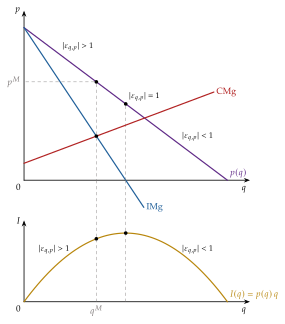
Derivación: \(\dfrac{p-\mathrm{CMg}}{p}=\dfrac{p-\mathrm{IMg}}{p}=\dfrac{p-\big(p'(q)\,q+p\big)}{p}=-p'(q)\,\dfrac{q}{p}=\dfrac{1}{|\varepsilon_{q,p}|}\).↩︎
Las pendientes se comparan con su signo, no en valor absoluto. La pendiente del IMg suele ser negativa, aunque con demandas muy convexas podría no serlo.↩︎
Si la función de beneficio es estrictamente cuasicóncava, la cantidad que maximiza el beneficio es única.↩︎
El monopolista puede tener beneficios (gráfico de la izquierda) o pérdidas (derecha) a corto plazo; con pérdidas, sigue produciendo mientras el precio cubra el coste variable medio.
↩︎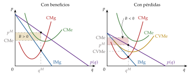
A largo plazo el monopolista tiene tiempo para ampliar su planta o para usar la existente en el nivel que maximiza su beneficio: puede corregir las pérdidas que sufra a corto plazo cambiando el tamaño de la planta.↩︎
Las 2 formulaciones que se encuentran en los manuales coinciden en lo que importa. Que la demanda pase por encima del CMe en algún punto es necesario para que exista algún tramo rentable; pero, si existe un \(q\) con \(p(q)\geq\mathrm{CMe}(q)\), entonces \(B(q)\geq 0\) y, como \(q^M\) maximiza el beneficio, \(B(q^M)\geq 0\), es decir, \(p(q^M)\geq\mathrm{CMe}(q^M)\). Basta, por tanto, comprobarla en el óptimo. Lo que no es correcto es exigir que el precio de monopolio supere el mínimo del CMe: el monopolista no produce en ese mínimo, sino donde \(\mathrm{IMg}=\mathrm{CMg}\).↩︎
En el gráfico de la izquierda, \(\mathrm{IMg}=\mathrm{CMg}\) se cumple justo en el mínimo del CMe, con pleno aprovechamiento de la capacidad y de las economías de escala. En el del centro, en el tramo decreciente del CMe: un mercado pequeño, con exceso de capacidad. En el de la derecha, en el tramo creciente: un mercado muy grande que obliga a producir más allá de la escala óptima, con deseconomías de escala.
↩︎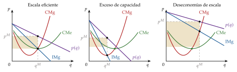
En equilibrio parcial, con utilidad cuasilineal, una asignación es eficiente en el sentido de Pareto si y solo si maximiza el excedente total, y eso exige \(p=\mathrm{CMg}\) en la última unidad (eficiencia asignativa): aquí las 2 nociones coinciden. Quién se queda con el excedente es una cuestión de equidad, no de eficiencia [ver tema 3.A.16].↩︎
Con \(p=a-bq\) y \(\mathrm{CMg}=c\): \(q^M=(a-c)/2b\), \(p^M=(a+c)/2\), \(B=(a-c)^2/4b\) y \(\mathrm{PIE}=\frac{1}{2}\cdot\frac{a-c}{2}\cdot\frac{a-c}{2b}=(a-c)^2/8b=B/2\).↩︎
La combinación de factores sigue siendo la más barata para la cantidad producida: \(\mathrm{RMST}_{LK}=w_L/w_K\). Aquí suponemos que el monopolista compra los factores en mercados competitivos, junto con otros demandantes; si además es el único comprador (monopsonista), el precio del factor depende de la cantidad que compra (III.1). Tampoco se dice que la retribución de los factores sea menor que en competencia, porque con menos producción su productividad marginal es mayor, sino que es menor que el valor de su producto marginal.↩︎
La última unidad se vende a \(p=\mathrm{CMg}\), así que la asignación es eficiente: en equilibrio parcial, la eficiencia asignativa y la de Pareto coinciden aquí. El problema es solo distributivo, porque los consumidores se quedan sin excedente.↩︎
Xavier Sala-i-Martín llama paradoja de Barbie a que muñecas que cuestan lo mismo de fabricar se vendan a precios muy distintos según la profesión que representan (Sala-i-Martín 2013). Más que discriminación de tercer grado, es un ejemplo de versiones entre las que el comprador elige.↩︎
El ejemplo clásico es el parque de atracciones, que cobra una entrada y un precio por atracción (Oi 1971): el dilema es cobrar una entrada cara y atracciones baratas o al revés.↩︎
Es una situación de información asimétrica [ver tema 3.A.13]: hay información oculta (la valoración de cada consumidor), heterogeneidad (si todos fueran iguales, no habría nada que discriminar) y conflicto de intereses (el consumidor no tiene interés en revelar que valora mucho el bien). La característica observable es una señal imperfecta de la valoración.↩︎
El problema es de inconsistencia temporal: al monopolista le gustaría comprometerse a no bajar el precio, pero, una vez que ha vendido a los que más lo valoran, le conviene bajarlo para vender al resto, y los consumidores lo anticipan [ver tema 3.A.14].↩︎
Un monopolio natural tradicional surge cuando la demanda es relativamente pequeña y la tecnología exige grandes costes fijos ligados a infraestructuras físicas (el cableado de la telefonía, las tuberías del agua). Con el tiempo puede dejar de ser sostenible, o incluso de existir, por la expansión de la demanda o por un cambio técnico que haga innecesaria parte de esas inversiones.↩︎
Con la demanda \(D^{*}\), que corta al \(\mathrm{CMe}_1\) entre \(q^0\) y \(q^1\) y queda siempre por debajo de \(\mathrm{CMe}_{1+2}\), el incumbente produce \(q^{*}\) a \(p^{*}=\mathrm{CMe}_1(q^{*})\), con beneficio nulo. Si entra otra empresa, repartirse el mercado no es rentable, porque el precio quedaría por debajo de \(\mathrm{CMe}_{1+2}\), y al incumbente solo le queda bajar el precio (y la cantidad) hasta el mínimo del coste medio, \(p^0\) y \(q^0\), donde el entrante tendría pérdidas: el entrante lo anticipa y no entra. Con una demanda \(D'\) que en algún tramo supera a \(\mathrm{CMe}_{1+2}\), el incumbente empieza bajando el precio, pero a partir de cierto punto le conviene acomodar la entrada y repartirse el mercado a un precio por encima de \(\mathrm{CMe}_{1+2}\), con beneficios, en lugar de seguir luchando con beneficio nulo: el entrante lo anticipa y entra, y las 2 empresas producen donde el beneficio conjunto es máximo. La mayoría de los manuales suponen, como Baumol, Panzar y Willig, que el incumbente no reacciona y mantiene su precio, y por eso concluyen que el monopolio natural no es sostenible en todo el tramo entre \(q^0\) y \(q^1\). La secuencia completa está en el anexo B.6.↩︎
Hablamos de primer y segundo óptimo, y no de óptimos «de primer y segundo orden», para no confundirlos con las condiciones de primer y segundo orden de los problemas de optimización [ver tema 3.A.22].↩︎
Hay, por tanto, un trade-off entre la distorsión de los impuestos y la de los precios; un problema de eficiencia dinámica, porque la empresa sabe que sus pérdidas se cubrirán, y uno redistributivo, entre quienes pagan los impuestos y quienes usan el servicio. Además, en la práctica el regulador rara vez conoce bien los costes de la empresa.↩︎
Si la cuota no expulsa a nadie, funciona como una transferencia de suma fija del consumidor a la empresa: no cambia ninguna decisión en el margen y la asignación es eficiente. El coste de la tarifa en dos partes es distributivo, salvo que la cuota expulse a consumidores que valoran el bien por encima de su coste marginal.↩︎
La cuota no tiene por qué ser igual para todos: para no expulsar a los usuarios de menos renta se les puede cobrar menos, financiándolo con cuotas mayores al resto; y, por eficiencia, conviene cargar más la cuota a quienes tienen una demanda de acceso menos elástica, la lógica de Ramsey aplicada a la parte fija (Viscusi, Harrington y Vernon 2005). Las 2 cosas pueden chocar: los usuarios de demanda de acceso más inelástica suelen ser los de menor renta, porque los servicios de red son de primera necesidad.↩︎
Podría explicar, por ejemplo, por qué un supermercado con tiendas físicas que pasa a vender también en internet fijaría precios más altos en línea que un supermercado que solo vende en internet.↩︎
Es distinto del aprendizaje, en el que la producción de hoy abarata la de mañana: \(q_1\) y \(q_2\) son el mismo bien en 2 periodos. Con un factor de descuento \(\beta\) y un coste de mañana \(c_2(q_1)\), con \(c_2'<0\), la condición de primer orden del primer periodo es \(\mathrm{IMg}_1(q_1)=c_1+\beta\,c_2'(q_1)\,q_2<c_1\): el monopolista produce hoy más que uno miope, y puede vender incluso por debajo del coste marginal corriente, porque cada unidad le enseña a producir más barato. A cambio, traslada su poder de mercado al futuro. El ejemplo clásico es el de la industria aeronáutica de Wright (1936) [ver tema 3.A.12].↩︎
Con demanda final \(p=a-bQ\) y coste marginal \(c\) del vendedor del factor: integrados, \(Q=(a-c)/2b\) y \(p=(a+c)/2\). Separados, el comprador, que paga \(w\) por unidad, vende \(Q=(a-w)/2b\); anticipándolo, el vendedor fija \(w=(a+c)/2\), y el comprador vende \(Q=(a-c)/4b\) a \(p=(3a+c)/4\).↩︎
Jean Tirole recibió el Premio Nobel de Economía en 2014 «por su análisis del poder de mercado y la regulación» (The Nobel Prize 2014). Jean-Jacques Laffont, su coautor, había muerto en 2004, y el Nobel no se concede a título póstumo.↩︎
George Stigler recibió el Nobel en 1982 «por sus estudios pioneros de las estructuras industriales, el funcionamiento de los mercados y las causas y efectos de la regulación pública» (The Nobel Prize 1982).↩︎
En la Unión Europea, las normas sobre competencia necesarias para el funcionamiento del mercado interior son una de las 5 competencias exclusivas de la Unión (art. 3 del TFUE) [ver tema 3.B.39]. Destacan 4 pilares. El primero, la prohibición de los acuerdos colusorios: «serán incompatibles con el mercado interior y quedarán prohibidos todos los acuerdos entre empresas, las decisiones de asociaciones de empresas y las prácticas concertadas que puedan afectar al comercio entre los Estados miembros y que tengan por objeto o efecto impedir, restringir o falsear el juego de la competencia dentro del mercado interior» (art. 101) (Unión Europea 2016). El segundo, la prohibición del abuso de posición dominante: no se penaliza la posición dominante en sí, sino su «explotación abusiva» (art. 102). El tercero, el control de las concentraciones, regulado por el Reglamento 139/2004: se declara incompatible toda concentración que obstaculice de forma significativa la competencia efectiva en el mercado interior o en una parte sustancial de él (Consejo de la Unión Europea 2004). El cuarto, el control de las ayudas de Estado (arts. 107 a 109 del TFUE).↩︎
El problema no desaparece si los poderes públicos asumen la propiedad del monopolio natural: la regulación sigue siendo necesaria, aunque sea implícita, para guiar la acción de la empresa pública.↩︎
Hay una gran literatura sobre el número óptimo de participantes en la subasta, las condiciones de acceso, la selección de los oferentes y la propia técnica de la subasta.↩︎
La ineficiencia es mayor cuanto mayor es la diferencia entre el coste medio y el marginal, es decir, cuanto más importantes son los costes fijos.↩︎
Si la concesión es corta (menor que el plazo de amortización de los activos específicos), hay problemas sea quien sea el propietario de los activos: si invierte el sector público, la empresa no tiene incentivos a usar bien el equipo; si invierte la empresa, cargará un margen para cubrirse del riesgo de no renovar. Si es larga, se suavizan esos problemas, pero se pierden las ventajas de la competencia potencial, y la incertidumbre sobre la demanda y los costes hace imposible diseñar y hacer cumplir un contrato completo.↩︎
Desde el 1 de junio de 2021, los consumidores domésticos de electricidad pagan los peajes y cargos con 3 periodos que fija la CNMC: punta (de 10 a 14 h y de 18 a 22 h los días laborables), llano (de 8 a 10 h, de 14 a 18 h y de 22 a 24 h) y valle (de 0 a 8 h y todas las horas de los fines de semana y los festivos nacionales), con la parte regulada del precio más cara en punta (Comisión Nacional de los Mercados y la Competencia 2020). Es una tarifa de punta y valle: quien consume en punta paga la red que se dimensiona para la punta.↩︎
«Productividad de la industria» no implica que haya varias empresas. En una autopista, por ejemplo, el monopolista puede aumentar su productividad consiguiendo que circulen más vehículos con los mismos costes o reduciendo los costes para el mismo tráfico.↩︎
Es la misma \(\lambda\) de la regla de Ramsey-Boiteux (II.2.3): el valor social de un euro más de presupuesto. Laffont y Tirole (1993, cap. 3) llegan al mismo número de Ramsey, \(\lambda/(1+\lambda)\).↩︎
Son soluciones a través del mercado, en las que la empresa recupera sus costes con los precios, en lugar de con transferencias, que tienen el coste sombra de los fondos públicos.↩︎
La regulación en forma de política comercial (contingentes) o fiscal (exenciones) crea rentas de monopolio e incentiva a dedicar recursos a captarlas: algunas medidas regulatorias pueden camuflar intereses particulares y convertirse en una barrera de entrada injustificada.↩︎